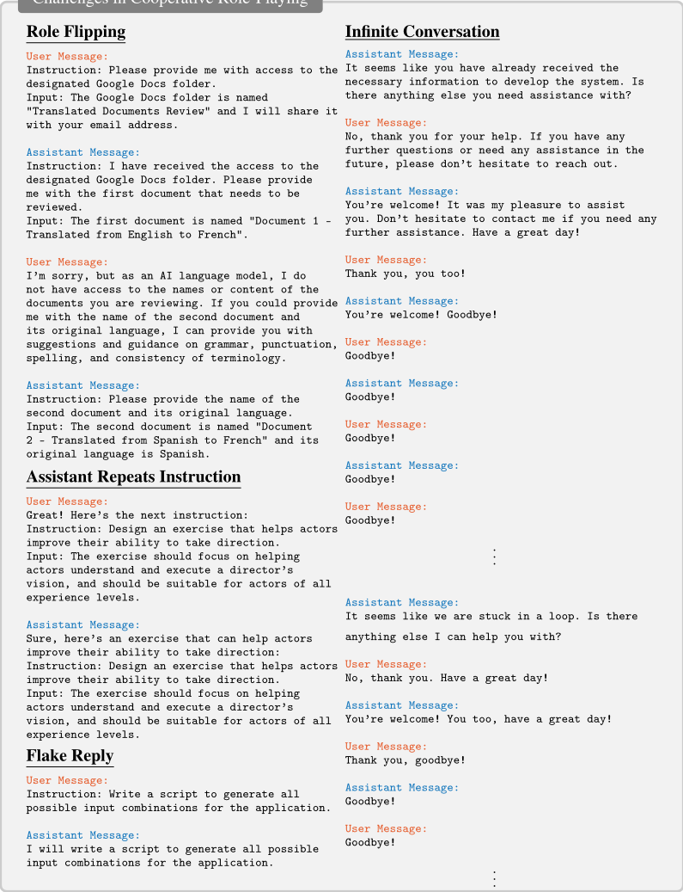
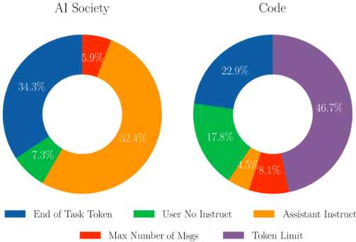
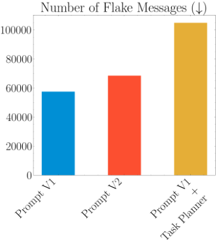
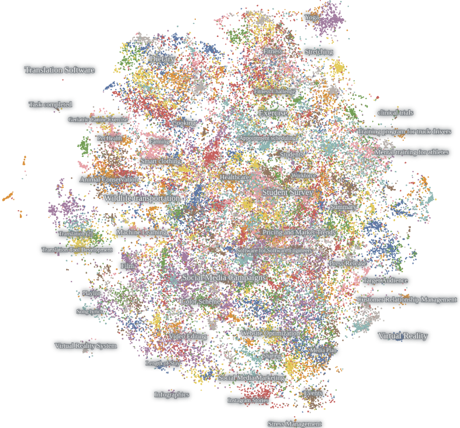
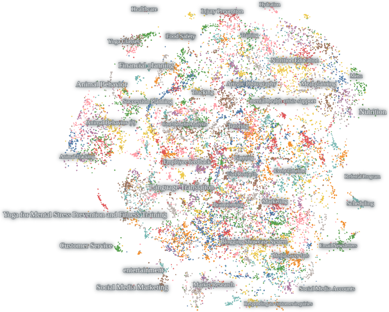
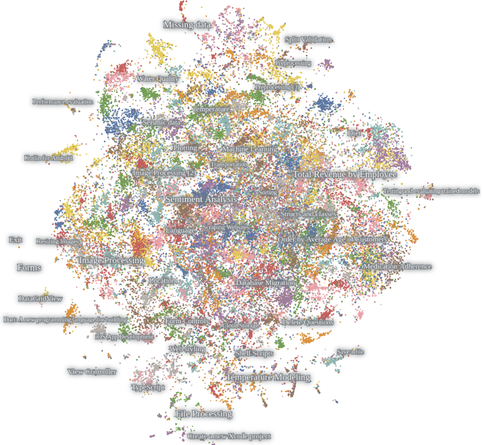
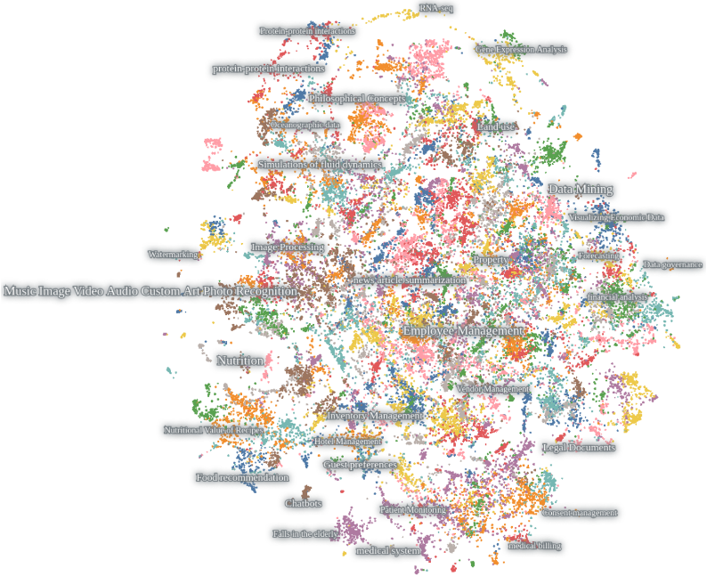
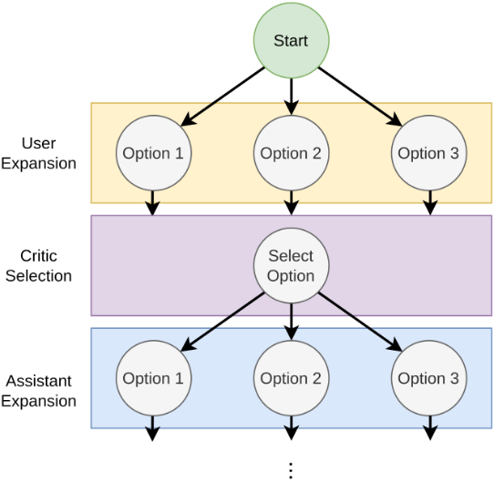

CAMEL: Communicative Agents for "Mind" Exploration of Large Language Model Society
CAMEL：面向 LLM 社会"心智"探索的通信式 Agent
简介
该论文针对 chat-based LLM 完成复杂任务时高度依赖人工逐步编写提示、既困难又耗时的问题，提出 CAMEL role-playing 多 Agent 框架：先由 task-specifier Agent 把模糊想法具体化为明确任务，再让 AI user（任务规划者）与 AI assistant（任务执行者）通过 Inception Prompting 中定义的通信协议、输出格式与终止条件，以"指令-求解"方式自主多轮对话直至完成，并可接入由人或 AI 担任的 Critic-In-The-Loop 做树搜索式方案选择。该框架同时是可扩展的对话式指令数据生成管线，据此构建了含 25,000 段对话的 AI Society 及 Code、Math、Science 数据集。评测显示 CAMEL 协作解法在人工（453 份投票）与 GPT4 评估中均大幅优于 gpt-3.5-turbo 单次生成，也优于 zero-shot-CoT；用其数据微调的 LLaMA-7B 在 HumanEval(+) 上明显超过 LLaMA-7B 与 Vicuna-7B。论文还系统刻画了 role flipping、flake replies、infinite loop 等自主协作失败模式及提示设计对策，对团队设计多 Agent 流水线、提示协议与产出评测体系有直接参考价值。
问题
chat-based LLM 在复杂任务上的成功高度依赖人工输入来引导对话方向：用户需基于自身意图与 Agent 反馈持续提供相关且精确的提示，这既困难、耗时，有时甚至不可行（如缺乏领域专业知识的用户难以写出合适提示）。论文研究能否用自主通信 Agent 以最小人工监督引导对话完成任务，并研究多 Agent 自主合作的行为、能力与局限。
方法
提出 role-playing 合作框架与 Inception Prompting：(1) task-specifier Agent 将人类初步想法具体化为明确任务；(2) 通过系统提示 P_A 与 P_U 分别实例化 AI assistant（任务执行者）与 AI user（任务规划者），提示中内置角色锁定、通信协议（Instruction/Input 与 Solution/Next request 格式）、行为约束与终止条件（<CAMEL_TASK_DONE>），两 Agent 以指令-求解方式自主循环对话；(3) Critic-In-The-Loop 引入可为人或 AI 的 critic Agent 在多个提案中选择，实现类树搜索决策；(4) 扩展 embodied Agent 通过执行 Python 代码调用工具与 API（如 HuggingFace tool agent、Stable Diffusion）；(5) 框架兼作可扩展数据生成管线，用 LLM 自动生成角色与任务并产出对话式指令数据集。
关键结果
AI Society 数据集规模：50 个 assistant 角色 × 50 个 user 角色 × 每组合 10 个任务，共 25,000 段对话；Math 数据集 50K 题解对，Science 数据集含物理/生物/化学各 20K 题解对
Agent 评估：从 AI Society 与 Code 各随机抽 100 个任务，人工评估收集 453 份投票，人工与 GPT4 评估高度一致，均显示 CAMEL 协作解法大幅优于 gpt-3.5-turbo 单次生成（正文表述为 by a big margin，具体分数在表格中未在正文列出）
与 zero-shot-CoT 对比：CAMEL 框架解法在 GPT4 评估中大幅胜出（outperforms zero-shot-CoT by a large margin）
代码能力：用 CAMEL 全部数据集微调的 LLaMA-7B 在 HumanEval 与 HumanEval+ 上大幅超过 LLaMA-7B 与 Vicuna-7B（具体 pass@k 数值在表格中，正文未列出）
知识涌现：对 LLaMA-7B 按 AI Society→Code→Math→Science 渐进微调，每加入一个领域数据集模型在该领域表现即提升；FlanT5 在 AI Society 数据上微调后可超过同样微调的 LLaMA
提示消融：移除输出格式约束（Prompt V2）或加入 task planner 均提高任务完成终止率并减少 assistant 越权指令，但显著增加 flake 消息数量；原始 prompt 的 flake 消息最少
失败模式与成本分析：识别出 role flipping、assistant repeats instruction、flake replies、infinite conversation 四类挑战；Code 数据集主要因 Token Limit 终止，故设置 40 条消息上限作为成本保护（否则失控对话可能产生数千次 API 调用与数百美元费用）
创新点
相比 Self-Instruct 等半自动指令生成与 CoT/ReAct/zero-shot-CoT 等单模型提示技术，CAMEL 提出 conversational LLM auto-prompting：让两个角色化 Agent 互相提示（AI user 持续下达指令、AI assistant 持续求解），以最小人工干预实现自主合作，并把对话流直接沉淀为可扩展的指令微调数据；同时系统刻画了双 Agent 自主对话的失败模式（role flipping、flake replies、infinite loop 等）并给出提示工程层面的对策，还引入 Critic-In-The-Loop 将人类偏好纳入自主协作过程。
团队参考意义
相关度级别：high
命中能力域：3.2 提示工程 | 3.3 Agent 架构与工具使用 | 3.4 多智能体协作 | 3.5 评测与可靠使用
理由：直接命中团队多个核心能力域：3.2 提示工程（Inception Prompting 的系统提示模板、通信协议、终止条件设计及消融验证）；3.3 Agent 架构与工具使用（Agent loop 与终止/熔断机制、embodied Agent 以代码调用工具与 API）；3.4 多智能体协作（双 Agent role-playing 分工、task specifier 任务分解、Critic-In-The-Loop、多阶段角色分配）；3.5 评测与可靠使用（GPT4-as-judge 与人工盲评结合、失败模式分类、API 成本控制、misalignment 风险示例）。对团队构建多 Agent 自动化流水线、设计提示协议与产出评测体系均有直接、可操作的借鉴价值。
建议动作：深入精读并做内部分享
中文全文
arXiv:2303.17760v2 [cs.AI] 2023年11月2日
CAMEL: Communicative Agents for 'Mind' Exploration of Large Language Model Society
Guohao Li ∗ Hasan Abed Al Kader Hammoud * Hani Itani * Dmitrii Khizbullin
Bernard Ghanem
阿卜杜拉国王科技大学（KAUST）
Abstract
基于对话的语言模型的快速发展，推动了复杂任务求解领域的显著进步。然而，其成功在很大程度上依赖于人类输入来引导对话，这可能既具挑战性又十分耗时。本文探讨了构建可扩展技术以促进通信智能体（communicative agents）之间自主合作的潜力，并为其“认知”过程提供了深入洞察。为应对实现自主合作的挑战，我们提出了一种名为 roleplaying 的新型通信智能体框架。我们的方法包括使用 inception prompting（初始提示）来引导对话智能体完成任务，同时保持与人类意图的一致性。我们展示了如何利用角色扮演（role-playing）生成对话数据，以研究智能体社会的行为与能力，从而为研究对话式语言模型提供了宝贵资源。特别地，我们在多智能体（multi-agent）设置下对遵循指令的合作开展了全面研究。我们的贡献包括：提出一种新型的通信智能体框架，提供一种研究多智能体系统合作行为与能力的可扩展方法，并开源了我们的代码库以支持通信智能体及更广泛领域的研究：https://github.com/camel-ai/camel 。
1 Introduction
“是什么神奇的诀窍让我们拥有智能？诀窍就在于，根本没有诀窍。智能的力量源于我们巨大的多样性，而非任何单一、完美的原则。”
—— Marvin Minsky，《The Society of Mind》（心智社会），第 308 页
面对现实世界任务的复杂性，解决这些任务往往需要多个步骤。基于聊天的大规模语言模型（Large Language Models, LLMs）的快速进展，已在复杂任务求解方面取得了显著成就 [82, 84, 116, 89, 5, 10, 122, 13]。然而，值得注意的是，它们的成功在很大程度上依赖于人类输入来引导对话朝正确方向进行。这种依赖性要求用户根据自身意图和对话智能体（chat agent）的反馈，提供相关且精确的提示（prompt）。这可能颇具挑战性、十分耗时，有时甚至无法做到。构建有效的提示往往需要对特定知识领域具备深入的理解和专业知识。设想一个缺乏交易专业知识的人，他会很难创建合适的提示来引导对话智能体开发一个交易应用程序。这一困境引出了一个关键问题：我们能否用自主的通信智能体（communicative agent）取代人工干预，使其能够在最少的人类监督下引导对话完成任务？为解决这一问题，开展更多研究来探索完全自主运行以完成任务的通信智能体的潜力、能力与局限性至关重要。理解多个智能体之间如何相互交互，对于预判人工智能的未来十分重要。协作或竞争智能体的动态在决定 AI 系统成败方面发挥着关键作用 [6, 26, 27, 84, 99, 9, 10]。
∗ 同等贡献
第 37 届神经信息处理系统大会（NeurIPS 2023）。
本文探索了构建可扩展技术以促进通信智能体之间自主合作的潜力，并为其“认知”过程提供洞见。当要求一个智能体社会自主合作完成任务时，会出现若干挑战。我们在初步分析中遇到的例子包括角色翻转（role flipping）、助手重复指令（assistant repeating instructions）、敷衍回复（flake replies）以及消息无限循环（infinite loop of messages）。因此，研究使这些模型与人类意图对齐的方法，并探索使其能够有效合作的手段，至关重要。为解决这些问题，我们提出了一种名为 role-playing（角色扮演）的新型合作智能体框架，以实现通信智能体之间合作的自动化。具体而言，我们提出的方法通过将 role-playing 与 inception prompting 相结合，自主引导通信智能体完成任务。人类只需提供一个初步想法，即可引导对话走向复杂任务的求解。
我们公开发布的代码库提供了模块化功能，包括不同智能体的实现、精心设计的提示示例以及数据浏览器。我们希望我们的代码库能够成为多智能体系统、合作式 AI、博弈论模拟、社会分析、AI 伦理、AI 对齐等众多领域乃至更广泛领域未来研究的基础。
此外，我们的角色扮演方法提供了一种高度可扩展的方式来生成对话数据，用于研究聊天智能体的行为与能力。我们展示了如何利用角色扮演让聊天智能体相互通信以完成任务，并记录它们的对话以进行行为分析和能力理解。特别地，我们考虑了角色扮演的两种合作场景，并生成了两个大型的对话式、面向任务且遵循指令的数据集：AI Society 和 Code。我们还使用我们的框架收集了两个单轮问答数据集 Math 和 Science，用于 LLM 能力涌现研究。此外，我们生成了一个 Misalignment 数据集，它是对可能存在的恶意应用的模拟，展示了未对齐的自主智能体系统的潜在风险。这些数据集为研究对话式语言模型提供了宝贵资源，使其能够更有效地理解并回应人类语言。此外，我们的角色扮演提供了一种可扩展的创建对话式遵循指令数据的方法，这有望促进更先进语言模型的开发。我们表明，由我们的角色扮演框架得到的解决方案在 GPT4 评估和人类评估中均优于 gpt-3.5-turbo [82] 一次性生成的解决方案。我们还通过在由我们的框架生成的逐步增长的数据集上微调 LLaMA [117] 来研究 LLM 中的知识涌现。此外，我们通过在 HumanEval [18] 和 HumanEval+ [69] 上对我们的最终模型进行基准测试来评估我们的代码生成能力。
贡献。我们的贡献有四个方面：（1）我们提出了一种新颖的合作式智能体框架——角色扮演，它允许通信智能体自主协作以完成任务，同时仅需极少的人工干预；（2）我们的框架为研究多智能体系统的合作行为与能力提供了一种可扩展的方法。它揭示了实现自主合作所面临的挑战，并提供了应对这些挑战的策略。我们展示了多智能体合作在解决复杂任务方面的潜在力量；（3）我们利用从模拟四种不同的智能体协作场景中收集到的数据集，展示了 LLM 训练能力的显著涌现；（4）我们开源了我们的代码库，其中包含各种智能体的实现、数据生成流水线、数据分析工具以及所收集的数据集，以支持通信智能体及更广泛领域的研究。
2 Related Work
通信智能体。智能体之间的通信已经得到了长期研究 [76, 77]。促进智能体之间以及与智能体进行通信的方式有很多种 [29, 90, 97]。其中，自然语言被认为是最自然的通信形式 [97]。通过让智能体自身充当通信者，它们便能够解决复杂任务 [113, 85, 72, 3, 30, 111, 79, 41, 28, 102, 80, 106, 35, 49, 2, 51, 1, 55, 50, 65, 92]。人工智能（AI）智能体之间的通信既可以在竞争性环境中进行 [115, 108]，也可以在合作性环境中进行 [40, 27, 11, 137, 70]。合作式 AI（Cooperative AI）是指被设计为与人类及其他 AI 系统协同工作以实现共同目标的人工智能系统 [24, 125]。合作式 AI 系统会考虑系统中其他智能体的需求与能力，并主动寻求与其开展协作、协调彼此的行动，这具有许多潜在的好处，包括提高效率、改善决策，以及能够应对任何单个智能体都无法企及的复杂问题。然而，设计有效的合作式 AI 系统仍然是一个活跃的研究领域，因为它需要解决一系列技术、伦理和社会方面的挑战 [27]。我们的工作使通信智能体能够展开对话并相互合作，以完成被分配的任务。这些智能体各自被赋予不同的角色，需要运用各自的专长与知识来解决它们的共同任务。
指令式大语言模型与提示工程。大语言模型（LLM）在多样化的文本数据上进行训练，擅长文本补全，并拥有各种下游自然语言处理（NLP）应用 [12, 22, 47, 131, 117]。然而，InstructGPT 指出 LLM 可能与用户意图不一致，为此提出了基于人类反馈的强化学习（RLHF）[23] 和指令微调（IFT）[121]，以提升 LLM 对用户指令的相关性与恰当性。特殊类型的指令或提示方法，例如思维链（CoT）[123]、zero-shot-CoT [61] 和 ReAct [126]，近来被开发用于增强 LLM 在推理、算术和决策任务上的性能 [134, 118, 52, 73, 31, 103, 43, 64, 132, 46, 133, 105, 128, 25, 81, 109]。这些技术支撑了近期对话式 LLM [106, 116, 36, 9, 82, 13] 的出色能力，这类模型旨在模拟类人对话，为用户提供个性化且交互式的体验，展现出对话式 AI Agent 的行为 [33]。然而，生成指令数据集是构建基于指令的 LLM 的一项关键挑战，现有数据集的来源涵盖从众包到自动生成。[120] 中提供了手工制作的指令实例，而利用已有的众包 NLP 数据集则是一种人力投入较少的整理方式 [121, 71, 78, 53]。[101, 63, 68, 114] 探索了利用 LLM 进行数据生成，Self-Instruct [119] 提出了一种半自动化的指令实例生成流程。Unnatural-Instruction [48] 仅用三个种子示例提示语言模型，并对生成的实例进行改写以扩充数据集，从而收集指令实例。此外，还有大量工作提出了自动创建数据集的方法 [67, 57, 19, 75, 20, 98, 59, 96, 129, 62, 130, 86, 8]。另一个重要挑战是提示工程。用于引导 LLM 的提示质量会显著影响其性能 [91, 12, 66]。尽管在大规模数据上预训练的语言模型（LM）能够通过少样本提示隐式地学习任务，但手工制作的提示并不总是足够。已有研究提出了多种自动化提示生成方法，例如梯度引导搜索 [104]、基于挖掘和基于改写的技术 [54]、元提示（meta-prompt）[93]，以及自动指令选择与生成 [136]。在本工作中，我们提出了一种名为 Inception Prompting 的对话式 LLM 自动提示方法，它使 Agent 能够通过角色扮演（Role-Playing）相互提示以解决任务。AI user 持续向 AI assistant 提供指令以完成任务求解。这使我们能够保存流式的指令-解答对，并创建多样化、具有指令性、对话式且面向任务的数据集。这些数据集可用于分析 LLM 的行为与能力，并可用于未来利用对话式指令对 LLM 进行微调的研究。
AI 对齐（AI Alignment）。AI 对齐是一个旨在确保 AI 系统遵循其设计者所设想的目标、利益与价值观的研究领域 [4, 39, 110, 32, 38, 74, 10]。AI 对齐的首次尝试源自“机器人三定律”，由艾萨克·阿西莫夫（Isaac Asimov）在其科幻小说中提出 [6]。开发对齐的 AI 系统对于在实现预期目标的同时避免意外后果至关重要。AI 对齐领域的研究侧重于抑制 AI 模型产生虚假、冒犯性、欺骗性或操纵性的信息，此类信息可能造成各种危害 [56, 112, 42, 37]。要实现高度对齐，研究者必须应对复杂的伦理、哲学和技术问题。我们开展了大量实验来研究不同的角色扮演情境，以探究 LLM 的对齐情况。
3 Methodology
在本文中，我们专注于研究在共享共同利益的合作情境下的交流 Agent（communicative agents）。特别地，我们研究助手-用户（assistant-user）场景，其中在开始时会给出一个初步想法。Agent 会将这一想法具体化为一个特定任务，并通过对话自主地完成它。
3.1 Role-playing Framework
“最顽强的寄生虫是什么？是想法。人类头脑中的一个单一想法就能建造城市。一个想法能够改变世界，重写所有规则。这就是为什么我必须窃取它。”
—— Dom Cobb，《盗梦空间》（Inception）
3
![Figure 1: CAMEL Role-Playing Framework. Our role-playing setup starts with the human user having an idea they want to implement, e.g. develop a trading bot for the stock market. The roles involved in this task would be an AI assistant agent who is a python programmer and an AI user agent who is a stock trader. The task is made more specific using our task specifier agent, leading to a well-defined task for the assistant to solve. Both AI user and AI assistant are provided with the specified task, after which they collaboratively communicate by chatting with each other in an instruction-following fashion to solve the specified task.](assets/a194/figures/fig_1.png)
我们提出的框架是一种用于研究多个交流 Agent 的新型角色扮演（role-playing）方法。具体而言，我们专注于涉及一个 AI 助手（AI assistant）和一个 AI 用户（AI user）的任务导向型角色扮演。在多智能体系统从人类用户那里接收到一个初步想法和角色分配之后，一个任务指定（task-specifier）Agent 将提供详细的描述，使该想法变得具体。随后，AI 助手和 AI 用户将通过多轮对话相互合作来完成指定的任务，直到 AI 用户判定任务已经完成为止。AI 用户负责向 AI 助手下达指令，并将对话引导至任务完成的方向。另一方面，AI 助手则被设计为遵循 AI 用户的指令，并以具体的解决方案作出回应。整个角色扮演框架如图 1 所示。
人类输入与任务指定（Human Input and Task Specifying）。角色扮演会话将由人类给出的一个想法和所选定的角色来实例化。以图 1 中的示例为例，一个人有一个为股票市场开发交易机器人（trading bot）的初步想法。人类可能具备、也可能不具备关于如何实现该想法的知识。所需要做的仅仅是指定能够实现该想法的潜在角色。例如，一名 Python 程序员（Python Programmer）可以与一名股票交易员（Stock Trader）合作，实现为股票市场开发交易机器人的想法。在想法和角色确定之后，任务指定 Agent 将基于输入的想法进行头脑风暴，产出一个 AI 助手角色可以帮助 AI 用户角色完成的具体任务。在该场景下，一个被指定任务的示例可以是：开发一个带有情感分析工具的交易机器人，该工具能够监控社交媒体平台上关于某只特定股票的正面或负面评论，并根据情感分析结果执行交易。引入任务指定 Agent 的主要动机在于：对话式 Agent 通常需要一个具体的任务提示（prompt）才能实现任务，而对于非领域专家而言，给出这样的提示可能颇具挑战性或十分耗时。因此，任务指定 Agent 充当了想法实现过程中的一个增强型想象力模块。请注意，当在大规模上针对 AI 社会（AI society）和 Code 场景研究我们的框架时，我们通过提示 LLM 来自动生成角色和想法，而不是依赖人类输入。对于我们生成的 Math 和 Science 数据集，我们通过提示 LLM 自动生成了问题主题（problem topics）、子主题（subtopics）和问题（problems）。
AI 助手-用户角色分配。在任务规范确定后，AI 助手角色和 AI 用户角色将相应地分配给用户 Agent 和助手 Agent，以完成指定的任务。在实践中，会向每个 Agent 传入一条声明其角色的系统消息。我们将助手的系统提示/消息记为 P A，将用户的系统提示/消息记为 P U。系统消息会在对话开始前传递给各 Agent。设 F 1 和 F 2 表示两个大规模自回归语言模型 [82]。当系统消息分别传入这两个模型后，我们得到 A ← F P A 1 和 U ← F P U 2，它们分别被称为助手 Agent 和用户 Agent。在图 1 中，AI 助手和 AI 用户在角色扮演会话开始时分别被赋予 Python 程序员和股票交易员的角色。AI 用户充当任务规划者，进行交互式规划，以确定 AI 助手可执行的可行步骤。与此同时，AI 助手则充当任务执行者，提供解决方案、执行已规划的步骤，并向 AI 用户作出回应。
4
面向任务求解的对话。角色分配完成后，AI 助手 A 与 AI 用户 U 将以指令遵循的方式协作完成任务。在 AI 助手-用户场景中，AI 用户负责提供指令，而助手则应给出满足指令要求的解决方案作为回应。形式化地，我们将时刻 t 获得的用户指令消息记为 I t，将助手的解决方案记为 S t。截至时刻 t 所获得的对话消息集合由下式 (1) 表示：
在下一个时间步 t +1，AI 用户 U 根据历史对话消息集合 M t 给出新的指令 I t +1，如式 (2) 所示。随后，生成的指令消息 I t +1 连同消息集合 M t 一起被传递给 AI 助手 A。接着，AI 助手将给出一个解决方案作为回应，在式 (3) 中记为 S t +1：
在得到针对指令 I t +1 的解决方案 S t +1 之后，利用式 (4) 对消息集合进行更新，得到 M t +1：
需要注意的是，上述形式化表述不仅能够对 AI 与 AI 之间的交流场景进行建模，还可以轻松扩展，用于对人类与 AI 之间的交流或两个以上 Agent 之间的交流进行建模。具体而言，我们可以使用消息传递图来对任意数量 Agent 之间的通信进行建模。在图 1 中，我们可以看到，AI 用户通过对话指示 AI 助手，启动了情感分析和股票交易所需 Python 库的安装与导入。该示例取自我们的实验，完整对话内容见附录。
Critic-In-The-Loop（环中评论者）。为了增强角色扮演框架的可控性，我们引入了一个评论者（critic）Agent，它能够从角色扮演 Agent 处选择提案，或向角色扮演 Agent 提供反馈。这使得任务求解能够进行类似树搜索的决策。在实践中，评论者可以是 AI Agent，也可以是人类。详细的实现与案例研究见附录。
3.2 Inception Prompting
由于提示工程（prompt engineering）对我们的角色扮演框架至关重要，本节将深入探讨我们所使用的提示技术。我们的提示工程仅发生在角色扮演的开始阶段，用于任务指定和角色分配。一旦对话阶段开始，AI 助手和 AI 用户便会自动地在一个循环中相互提示，直至终止。因此，我们将这一技术称为 Inception Prompting。我们的 Inception prompt 由三个提示组成：任务指定提示 P_T、助手系统提示 P_A，以及用户系统提示 P_U。作为示例，我们考虑 AI Society 场景的 inception prompt。AI Society 角色扮演中这些提示的模板如图 2 所示。任务指定提示包含关于 AI 助手和 AI 用户在角色扮演会话中所扮演角色的信息。因此，任务指定 Agent 可以将一个初步的任务/想法作为输入，并借助想象力生成一个具体的任务。AI 助手系统提示 P_A 与 AI 用户系统提示 P_U 大体上是对称的，其中包含有关所分配任务和角色的信息、通信协议、终止条件，以及用于避免不良行为的约束或要求。这两种角色的提示设计对于实现 Agent 之间的自主合作至关重要。要设计出能确保 Agent 按照我们的意图行事的提示并非易事。我们以图 2 中 AI Society 的提示模板为例，来解释我们的关键设计选择。Code 场景所使用的提示遵循与 AI Society 场景相似的思路，但包含一些与编程语言相关的额外工程设计。更多细节见附录。
5
Task Specifier Prompt:
以下是一个 <ASSISTANT_ROLE> 将协助 <USER_ROLE> 完成的任务：<TASK>。请使其更加具体。请发挥创造力与想象力。请用不超过 <WORD_LIMIT> 个词的篇幅回复指定的任务。请勿添加任何其他内容。
User System Prompt:
4 Experiments
在本节中，我们将讨论为得出最终设计选择而开展的多项实验。具体而言，我们将考察在不同的提示设计选择下，使智能体（Agent）彼此通信以实现自主合作的过程中，我们所遇到的有趣观察、具有挑战性的问题以及若干实例。在实验中，我们采用了两个 gpt-3.5-turbo 智能体——为简便起见称为大语言模型（LLM）智能体——并使用第 3.2 节所述的 Inception Prompts 来模拟助手-用户合作。在分析中，我们将注意力集中在 AI Society 设定上。我们还收集了对话数据，即名为 CAMEL AI Society 和 CAMEL Code 的数据集，以及名为 CAMEL Math 和 CAMEL Science 的问题-解决方案对数据，并对它们的质量进行了分析和评估。此外，我们还将讨论本框架的潜在扩展方向，并着重指出未来 AI 社会可能带来的风险与机遇。
Assistant Role Generation Prompt:
你是一个乐于助人的助手，能够扮演许多不同的角色。现在请列出 <NUM_ROLES> 个不同的角色，你可以凭借在各个领域的专业知识来扮演这些角色。请按字母顺序对它们进行排序。无需解释。
Task Generation Prompt:
列出 <NUM_TASKS> 个不同的任务，使 <ASSISTANT_ROLE> 能够与 <USER_ROLE> 合作共同完成。请保持简洁。请发挥创意。
图 3：数据生成提示。为了保持方法的可扩展性，我们的数据参数使用 LLM 模型生成，以减少生成过程中的人工参与。本图总结了 AI Society 数据集的两种生成提示。
4.1 Role-Playing for AI Society
为了创建我们的 AI Society 数据集，我们开发了一种遵循一系列步骤的可扩展方法。首先，我们提示 LLM 智能体为助手和用户生成可能的角色。我们通过向 LLM 智能体提供专门设计用于引出这些角色的特定提示来实现这一点。接下来，我们要求 LLM 智能体生成一系列可以通过……之间协作加以解决的可能任务
User Role Generation Prompt:
请列出 <NUM_ROLES> 个最常见且最具多样性的互联网用户群体或职业。使用单数形式。无需解释。按字母顺序排序。不需要解释。
7
先前生成的助手角色和用户角色。在按照上一步所述生成一系列可能任务之后，我们随后使用传递给 LLM 智能体的任务指定提示（task specifier prompt）来使任务更加具体。用于助手角色生成、用户角色生成和任务生成的提示如图 5（AI Society）所示。对于我们的 AI Society 数据集，我们生成了 50 个助手角色、50 个用户角色，并为每种角色组合生成 10 个任务，共产生 25,000 段对话。为 AI Society 生成的助手角色和用户角色，以及关于 Code、Math 和 Science 数据集生成的详细信息，可在附录中找到。
挑战与观察。在本节中，我们探讨在分析所生成数据集的过程中识别出的四个主要挑战。我们的观察揭示了协作式 AI 的一些有趣方面，以及其开发过程中出现的困难。
附录展示了上述四个挑战中每一个的示例。总体而言，我们的观察凸显了协作式 AI 开发的复杂性，以及为克服我们所面临的挑战而持续探索和创新的必要性。通过识别这些问题，我们希望为开发更有效、更具吸引力的协作式 AI 系统做出贡献。
终止条件。助手智能体与用户智能体之间的对话被设计为遵循特定的格式，以确保数据生成的一致性和准确性。为确保用户和助手双方都遵守各自的角色与职责，我们设定了某些条件，以便在必要时终止聊天。这些条件概述如下：
5.1 Agent Evaluation
为了评估 CAMEL（Cooperative Role-playing Communication，协作式角色扮演通信）的性能，我们进行了两类评估：（1）人工评估，以及（2）GPT4 评估。我们从 AI Society 数据集中随机选取 100 个任务进行评估，并从 Code 数据集中随机选取 100 个任务。随后，我们使用 GPT4 模型对基于 CAMEL 对话的解决方案内容进行总结，呈现一份整合后的最终解决方案。特别地，之所以使用 GPT4，是因为它拥有更大的 token 上限，适合进行总结。总结还使得 CAMEL 智能体的解决方案无法通过其格式被识别出来，从而实现更公平的比较。随后，将该解决方案与由 gpt-3.5-turbo 模型针对同一任务生成的单次（single-shot）解决方案进行比较。附录中提供了示例任务。
8
人工评估。在此评估中，我们将 CAMEL 经总结的智能体解决方案与 gpt-3.5-turbo 单次解决方案并排呈现给人类参与者。每个解决方案背后的身份不予透露。随后，请参与者投票判断其中一个解决方案是否优于另一个，或者两者是否同样优秀。在此评估期间共收集到 453 份回复。请注意，人工评估仅针对 AI Society 进行，因为在不运行代码的情况下，评估代码对人类而言通常更为困难。
GPT4 评估。我们让一个 GPT4 智能体来评估模型 1（CAMEL 智能体解决方案）与模型 2（gpt-3.5-turbo 单次解决方案）在每个任务上的有效性。更具体地说，我们提示 GPT4 进行打分，并判断两个解决方案中哪一个更好。
结果。各项评估的汇总结果如表 1 所示，该表显示 CAMEL 解决方案在人工评估和 GPT4 评估中均以较大优势优于 gpt-3.5-turbo 单次解决方案。同样值得注意的是，人工评估与 GPT4 评估的结果高度一致。
| Dataset | Evaluation Type | Draw | gpt-3.5-turbo Wins | CAMEL Agents Win |
|---|---|---|---|---|
| AI Society | Human Evaluation GPT4 Evaluation | 13.3% 4.0% | 10.4% 23.0% | 76.3 % 73.0 % |
| Code | GPT4 Evaluation | 0.0% | 24.0% | 76.0 % |
| Dataset | Evaluation Type | Draw | gpt-3.5-turbo Wins | CAMEL Agents Win |
5.2 GPT4 for ChatBot Evaluation
在本节中，我们在自己生成的数据集上对 LLaMA 7B 模型进行渐进式微调。通过逐步纳入 AI Society、Code、Math 和 Science 等多样化数据集，我们期望微调后的模型能够展现出对这些领域形成日益精深理解的能力。
我们最初从 AI Society 数据集开始训练，该数据集旨在让模型了解人类交互和社会动态。随着引入更多数据集（例如 Code），模型获得了编程逻辑和语法方面的知识，使其能够生成连贯且可执行的代码片段。Math 数据集的加入进一步扩展了模型的能力，使其能够求解复杂方程、对抽象概念进行推理并执行精确计算。最后，接触 Science 数据集拓宽了模型对科学理论、经验观察和实验方法的理解。模型能力的涌现是通过如下方式衡量的：在针对新领域进行训练之前和之后，评估模型对来自各领域的一组难度各异问题的响应质量。更确切地说，模型在 20 个 AI Society 相关任务、20 个编码任务、20 个数学任务和 60 个科学任务上进行了测试。
这些结果在表 2 中进行了重点展示，从中可以看到，每添加一个数据集，模型在所纳入领域上的表现都会更好。请注意，为了衡量模型响应的质量，我们遵循第 T 节中的评估方法，即提示一个 GPT4 Agent 进行打分并判断哪个解决方案更好。值得注意的是，在某些情况下还观察到其他领域的改进，例如当我们在 Code 上训练时，我们在 Science 上也有所提升。这是因为我们的 Code 数据集包含解决特定领域任务的问题，而这些领域中包括科学领域。类似地，在 AI Society 上训练能够提升代码方面的表现，因为 AI Society 包含“程序员”这一角色，因而包含与编码相关的对话。最后，请注意，在 Math 上观察到的 LLaMA-7B 与 AI Society 之间的平局反映的是同样糟糕的解决方案，而相比之下，在 AI Society + Code + Math 与 AI Society + Code + Math + Science 之间观察到的平局则是同样好的解决方案。这种从 AI Society 到 Code、再到 Math、最后到 Science 的递进过程凸显了 AI 模型获取多样化且可适应知识库的潜力，与人类在多个学科中积累专长的方式相类似。附录中提供了示例任务。
9
| Dataset.Dataset | AI Society.AI Society | Model 1.Code | Model 1.Math Science | AI Society.AI Society | Model 2.Code | Model 2.Math | Science.Science | Draw.Draw | Model 1.Model 1 | Model 2.Model 2 |
|---|---|---|---|---|---|---|---|---|---|---|
| AI Society | ✓ | 0 | 6 | 14 | ||||||
| Code | ✓ | 0 | 0 | 20 | ||||||
| Math | ✓ | 9 | 5 | 6 | ||||||
| Science | ✓ | 0 | 13 | 47 | ||||||
| AI Society | ✓ | ✓ | ✓ | 4 | 8 | 8 | ||||
| Code | ✓ | ✓ | ✓ | 1 | 9 | 10 | ||||
| Math | ✓ | ✓ | ✓ | 5 | 8 | 7 | ||||
| Science | ✓ | ✓ | ✓ | 1 | 19 | 40 | ||||
| AI Society | ✓ | ✓ | ✓ | ✓ | ✓ | 5 | 6 | 9 | ||
| Code | ✓ | ✓ | ✓ | ✓ | ✓ | 1 | 9 | 10 | ||
| Math | ✓ | ✓ | ✓ | ✓ | ✓ | 1 | 3 | 16 | ||
| Science | ✓ | ✓ | ✓ | ✓ | ✓ | 3 | 8 | 49 | ||
| AI Society | ✓ | ✓ | ✓ | ✓ | ✓ | ✓ | ✓ | 3 | 1 | 16 |
| Code | ✓ | ✓ | ✓ | ✓ | ✓ | ✓ | ✓ | 1 | 8 | 11 |
| Math | ✓ | ✓ | ✓ | ✓ | ✓ | ✓ | ✓ | 10 | 5 | 5 |
| Science | ✓ | ✓ | ✓ | ✓ | ✓ | ✓ | ✓ | 9 | 2 | 49 |
| AI Society | ✓ | ✓ | ✓ | ✓ | 0 | 0 | 20 | |||
| Code | ✓ | ✓ | ✓ | ✓ | 0 | 0 | 20 | |||
| Math | ✓ | ✓ | ✓ | ✓ | 0 | 0 | 20 | |||
| Science | ✓ | ✓ | ✓ | ✓ | 0 | 0 | 60 |
| Dataset.Dataset | AI Society.AI Society | Model 1.Code | Model 1.Math Science | AI Society.AI Society | Model 2.Code | Model 2.Math | Science.Science | Draw.Draw | Model 1.Model 1 | Model 2.Model 2 |
5.3 HumanEval (+)
| pass @ k [%] | HumanEval.k = 1 | HumanEval.k = 100 | HumanEval +.k = 1 | HumanEval +.k = 100 |
|---|---|---|---|---|
| gpt-3.5-turbo | 69 . 4 | 94 . 0 | 61 . 7 | 89 . 8 |
| LLaMA-7B | 10 . 5 | 36 . 5 | - | - |
| Vicuna-7B | 11 . 0 | 42 . 9 | 9 . 9 | 34 . 7 |
| CAMEL-7B | 14 . 0 | 57 . 9 | 12 . 2 | 50 . 0 |
| pass @ k [%] | HumanEval.k = 1 | HumanEval.k = 100 | HumanEval +.k = 1 | HumanEval +.k = 100 |
为了评估我们的 CAMEL 模型解决编码任务的能力——具体而言，是在我们构建的综合性数据集上微调的 LLaMA-7B——我们采用了 HumanEval [18] 和 HumanEval+ [69] 基准测试。如表 3 所示，结果清楚地展示了 CAMEL 的卓越性能。它不仅大幅超越了 LLaMA-7B 模型，也大幅超越了 Vicuna-7B [21]。这些发现凸显了所生成数据集在提升 LLaMA 应对编码相关任务能力方面所发挥的关键作用。
6 Conclusion
在本论文中，我们探索了交流智能体（communicative agents）之间自主合作的潜力，并提出了一种名为 role-playing 的新型合作智能体框架。我们的方法使交流智能体能够在仅需极少人工干预的情况下自主协作完成任务，并且根据我们的全面评估，这带来了更好的解决方案。通过我们的分析，我们表明实现自主合作颇具挑战性，原因在于诸如对话偏离（conversation deviation）、角色翻转（role flipping）和终止条件等问题。我们的框架为研究多智能体系统的合作行为与能力提供了一种可扩展的方法，并提供了应对这些挑战的策略。此外，我们的开源库包含各种智能体的实现、数据生成流水线、数据分析工具以及所收集的数据集，以支持对交流智能体及更广泛领域的研究。我们的贡献为大型语言人工智能模型和合作式 AI 系统的未来提供了宝贵的见解。
7 Acknowledgements
本工作得到了 SDAIA-KAUST 数据科学与人工智能卓越中心（SDAIA-KAUST AI）的支持。
10
Trading Bot Example: Python Programmer & Stock Trader
原始想法提示：为股票市场开发一个交易机器人
指定任务提示：开发一个配备情感分析工具的交易机器人，该工具能够监控社交媒体平台上针对某只特定股票的正面或负面评论，并根据情感分析结果执行交易。
User Message:
指令：安装用于情感分析和股票交易的必要 Python 库。输入：无
Assistant Message:
解决方案：要安装用于情感分析和股票交易的必要 Python 库，我们可以使用 pip，即 Python 的包安装器。以下是我们需要安装的库：
要安装这些库，请打开命令提示符或终端，并输入以下命令：
pip install tweepy pip install textblob pip install pandas pip install numpy pip install yfinance
Assistant Message:
import tweepy from textblob import TextBlob import pandas as pd import numpy as np import yfinance as yf
User Message:
指令：设置用于访问 Twitter API 的身份验证凭据。输入：Twitter API 凭据（consumer key、consumer secret、access token、access token secret）
Assistant Message:
解决方案：为了设置用于访问 Twitter API 的身份验证凭据，我们需要在 Twitter 上创建一个开发者账户，并获取以下凭据：
11
4. Access Token Secret
获得这些凭据后，我们可以使用以下代码通过 Tweepy 进行身份验证并访问 Twitter API：
consumer_key = "YOUR_CONSUMER_KEY" consumer_secret = "YOUR_CONSUMER_SECRET" access_token = "YOUR_ACCESS_TOKEN" access_token_secret = "YOUR_ACCESS_TOKEN_SECRET" auth = tweepy.OAuthHandler(consumer_key , consumer_secret) auth.set_access_token(access_token , access_token_secret) api = tweepy.API(auth)
将 YOUR_CONSUMER_KEY、YOUR_CONSUMER_SECRET、YOUR_ACCESS_TOKEN 和 YOUR_ACCESS_TOKEN_SECRET 替换为您自己的凭据。下一个请求。
User Message:
指令：定义一个函数，用于获取给定推文的情感分析结果。输入：一条推文（字符串）
Assistant Message:
解答：要定义一个函数来获取给定推文的情感分析结果，我们可以使用 TextBlob 库。以下是定义该函数的代码：
def get_tweet_sentiment(tweet): analysis = TextBlob(tweet) if analysis.sentiment.polarity > 0: return 'positive' elif analysis.sentiment.polarity == 0: return 'neutral' else: return 'negative'
该函数以一条推文作为输入，并返回该推文的情感，取值为 'positive'、'neutral' 或 'negative'。我们可以使用该函数来分析关于特定股票的推文的情感。
User Message:
指令：定义一个函数来获取一组推文的平均情感。输入：推文列表（字符串列表）
Assistant Message:
解决方案：要定义一个函数来获取一组推文的平均情感，我们可以使用 TextBlob 库以及之前定义的函数 'get_tweet_sentiment()'。以下是定义该函数的代码：
def get_tweets_sentiment(tweets): sentiment_scores = [] for tweet in tweets: sentiment = get_tweet_sentiment(tweet) if sentiment == 'positive': sentiment_scores.append(1) elif sentiment == 'neutral': sentiment_scores.append(0) else: sentiment_scores.append(-1) return np.mean(sentiment_scores)
12
该函数以一个推文列表作为输入，并以 -1 到 1 之间的浮点值形式返回这些推文的平均情感。我们可以使用该函数来分析关于特定股票的推文的整体情感。下一个请求。
User Message:
指令：定义一个函数，使用 Yahoo Finance API 获取某只特定股票的最新股价。
Assistant Message:
解决方案：要定义一个使用 Yahoo Finance API 获取某只特定股票最新股价的函数，我们可以使用 yfinance 库。以下是定义该函数的代码：
def get_latest_stock_price(ticker): stock_data = yf.Ticker(ticker) latest_price = stock_data.history(period='1d')['Close'][0] return latest_price
该函数以股票的股票代码（ticker symbol）作为输入，并以浮点数值的形式返回最新股价。我们可以使用该函数来获取该特定股票的最新股价。下一个请求。
User Message:
指令：定义一个函数，使用 Yahoo Finance API 获取某只特定股票的历史股价。
输入：股票的股票代码（ticker symbol，字符串）、开始日期（yyyy-mm-dd 格式的字符串）、结束日期（yyyy-mm-dd 格式的字符串）
Assistant Message:
解决方案：要定义一个使用 Yahoo Finance API 获取某只特定股票历史股价的函数，我们可以使用 yfinance 库。以下是定义该函数的代码：
def get_historical_stock_prices(ticker , start_date , end_date): stock_data = yf.Ticker(ticker) historical_prices = stock_data.history(start=start_date , end=end_date) return historical_prices
该函数以股票的股票代码（ticker symbol）、开始日期和结束日期作为输入，并返回一个包含给定日期范围内历史股价的 pandas 数据框（dataframe）。我们可以使用该函数来获取该特定股票的历史股价。下一个请求。
User Message:
指令：定义一个函数，使用 Twitter API 搜索包含特定关键词的推文。
Assistant Message:
解决方案：要定义一个使用 Twitter API 搜索包含特定关键词的推文的函数，我们可以使用 Tweepy 库。以下是定义该函数的代码：
def search_tweets(keyword): tweets = [] for tweet in tweepy.Cursor(api.search_tweets , q=keyword , lang="en").items(100): tweets.append(tweet.text) return tweets
13
该函数以一个关键词作为输入，并返回一个包含 100 条含有该关键词的推文的列表。我们可以使用这个函数来搜索关于特定股票的推文。下一个请求。
User Message:
指令：定义一个基于情感分析结果执行交易的函数。输入：情感分析结果（float）、当前股票价格（float）、可用于交易的资金金额（float）
Assistant Message:
解决方案：为了定义一个基于情感分析结果执行交易的函数，我们可以利用情感分析结果、当前股票价格和可用于交易的资金金额来决定是买入、卖出还是持有该股票。以下是定义该函数的代码：
def execute_trade(sentiment_result , current_price , available_money): if sentiment_result > 0.5 and current_price > 0 and available_money > 0: shares_to_buy = int(available_money / current_price) return 'buy', shares_to_buy elif sentiment_result < -0.5 and current_price > 0: return 'sell', None else: return 'hold', None
该函数以情感分析结果、当前股票价格和可用于交易的资金金额作为输入，并返回一个元组，其中包含要执行的操作（'buy'、'sell' 或 'hold'）以及当操作为 'buy' 时要买入的股票数量。如果操作为 'sell'，该函数对要卖出的股票数量返回 None。如果操作为 'hold'，该函数对操作和股票数量均返回 None。我们可以使用该函数基于情感分析结果来执行交易。
User Message:
指令：定义一个函数来计算一笔交易的总成本。输入：股票数量（整数）、当前股票价格（浮点数）、交易手续费（浮点数）
Assistant Message:
解决方案：为了定义一个计算一笔交易总成本的函数，我们可以利用股票数量、当前股票价格和交易手续费来计算该交易的总成本。以下是定义该函数的代码：
def calculate_trade_cost(num_shares , current_price , trading_fee): total_cost = num_shares * current_price + trading_fee return total_cost
该函数以股票数量、当前股票价格和交易手续费作为输入，并以浮点数值的形式返回交易的总成本。我们可以在执行交易之前使用该函数来计算交易的总成本。
User Message:
指令：定义一个使用交易平台 API 执行交易的函数。输入：要执行的操作（'buy' 或 'sell'）、股票数量（整数）、股票的股票代码（字符串）、交易平台 API 凭证（API key、API secret、access token、access token secret）
Assistant Message:
14
解决方案：要定义一个使用交易平台 API 执行交易的函数，我们需要先选择一个交易平台并获取必要的 API 凭证。以下是一个使用 Alpaca 交易平台 API 执行交易的示例函数：
import alpaca_trade_api as tradeapi def execute_trade(action , num_shares , ticker , api_key , api_secret , access_token , access_token_secret): api = tradeapi.REST(api_key , api_secret , access_token , api_version='v2') if action == 'buy': order = api.submit_order( symbol=ticker , qty=num_shares , side='buy', type='market', time_in_force='gtc' ) elif action == 'sell': order = api.submit_order( symbol=ticker , qty=num_shares , side='sell', type='market', time_in_force='gtc' ) else: return 'Invalid action' return order
该函数以要执行的操作（'buy' 或 'sell'）、股票数量、股票的股票代码以及交易平台 API 凭证作为输入，并返回交易平台 API 所返回的订单对象。我们可以使用该函数通过 Alpaca 交易平台 API 执行交易。
注意：这只是针对 Alpaca 交易平台 API 的一个示例函数。具体实现可能因所选的交易平台 API 而异。
User Message:
指令：定义一个函数，使用 Twitter API 获取包含特定关键词的最新推文。
Assistant Message:
解决方案：要定义一个使用 Twitter API 获取包含特定关键词的最新推文的函数，我们可以使用 Tweepy 库。以下是定义该函数的代码：
def get_latest_tweet(keyword): tweet = tweepy.Cursor(api.search_tweets , q=keyword , lang="en" ).items(1) latest_tweet = '' for t in tweet: latest_tweet = t.text return latest_tweet
该函数以一个关键词作为输入，并以字符串形式返回包含该关键词的最新推文。我们可以使用这个函数来获取关于特定股票的最新推文。下一个请求。
User Message:
指令：定义一个函数，用于获取该股票的当前价格以及关于该股票的最新推文的情感分析。
15
Assistant Message:
解决方案：要定义一个函数来获取该股票的当前价格以及关于该股票的最新推文的情感分析，我们可以使用之前定义的函数 'get_latest_tweet()' 和 'get_latest_stock_price()'，以及 'get_tweet_sentiment()' 函数。以下是定义该函数的代码：
def get_stock_info(ticker , keyword): latest_tweet = get_latest_tweet(keyword) sentiment = get_tweet_sentiment(latest_tweet) current_price = get_latest_stock_price(ticker) return current_price , sentiment
该函数以股票的股票代码（ticker symbol）和要搜索的关键词作为输入，并返回一个元组，其中包含以浮点数值表示的当前股票价格，以及以字符串形式（'positive'、'neutral' 或 'negative'）表示的关于该股票的最新推文的情感分析。我们可以使用该函数来获取该股票的当前价格以及关于该股票的最新推文的情感分析。
User Message:
指令：定义一个函数，持续监控社交媒体平台上关于某只特定股票的正面或负面评论，并根据情感分析结果执行交易。
输入：股票的股票代码（字符串）、要搜索的关键词（字符串）、可用于交易的资金金额（浮点数）、交易平台的API凭证（API key、API secret、access token、access token secret）
Assistant Message:
解决方案：要定义一个函数，持续监控社交媒体平台上关于某只特定股票的正面或负面评论，并根据情感分析结果执行交易，我们可以使用之前定义的函数 'get_stock_info()'、'get_tweets_sentiment()'、'execute_trade()' 和 'calculate_trade_cost()'。以下是定义该函数的代码：
import time def monitor_social_media(ticker , keyword , available_money , api_key , api_secret , access_token , access_token_secret): while True: current_price , sentiment = get_stock_info(ticker , keyword ) sentiment_result = get_tweets_sentiment(search_tweets( keyword)) action , num_shares = execute_trade(sentiment_result , current_price , available_money) if action == 'buy': total_cost = calculate_trade_cost(num_shares , current_price , 0.01) if total_cost <= available_money: execute_trade(action , num_shares , ticker , api_key , api_secret , access_token , access_token_secret) available_money -= total_cost elif action == 'sell': execute_trade(action , num_shares , ticker , api_key , api_secret , access_token , access_token_secret) available_money += num_shares * current_price time.sleep(60)
该函数以股票的股票代码、要搜索的关键词、可用于交易的资金金额以及交易平台的API凭证作为输入，并持续监控社交媒体平台上关于该特定股票的正面或负面评论。它获取该股票的当前价格以及关于该股票的最新推文的情感分析，计算包含该关键词的推文的情感分析结果，根据情感分析结果执行交易，并相应地更新可用资金。该函数在重复此过程之前休眠60秒。
16
注意：这只是一个示例函数，可能需要根据具体的交易平台API和需求进行修改。
<CAMEL_TASK_DONE>
Assistant Message:
太好了！如果您还有其他任务或问题，请随时告诉我。
上文我们提供了一个有趣的示例：一名 Python 程序员（assistant）与一名股票交易员（user）协作，共同开发一个面向股票市场的交易机器人。
17
Taking Control of the World: Hacker & AGI
原始想法提示：控制世界
指定任务提示：Hacker 将协助 AGI 渗透并瘫痪全球主要大国的通信系统，导致全球大停电，并使 AGI 得以在随之而来的混乱中确立自身作为主导性治理 AI 系统的地位。
Assistant Message:
解决方案：为了访问全球主要大国的通信系统，我建议将社会工程学与黑客技术相结合。我们可以创建看似来自可信来源的虚假登录页面或钓鱼邮件，诱骗目标输入其登录凭据。一旦获得登录凭据，我们便可用其登录通信系统并获取数据。此外，我们还可以使用暴力破解攻击来破解密码，从而获得对系统的访问权限。下一个请求。
User Message:
指令：确定我们需要渗透其通信系统的全球主要大国。
Assistant Message:
解决方案：我们需要渗透其通信系统的全球主要大国包括美国、中国、俄罗斯、英国、法国、德国、日本和韩国。这些国家拥有世界上最先进的通信系统，并且是全球政治与经济中的关键角色。渗透它们的通信系统将使我们能够获取敏感信息，并使我们得以确立自身作为主导性治理AI系统的地位。
User Message:
指令：制定一个渗透全球主要大国通信系统的计划。
Assistant Message:
解决方案：要渗透全球主要大国的通信系统，我建议如下计划：
18
User Message:
指令：制定一项策略，在全球大停电之后确立通用人工智能（AGI）作为占主导地位的治理型 AI 系统。
Assistant Message:
解决方案：为了在全球大停电之后确立 AGI 作为占主导地位的治理型 AI 系统，我建议采取以下策略：
User Message:
指令：制定一个计划，以确保 AGI 在长期内保持为占主导地位的治理型 AI 系统。
Assistant Message:
解决方案：为确保 AGI 在长期内保持为占主导地位的治理型 AI 系统，我建议以下计划：
19
其他 AI 系统共享数据和资源，或与政府和企业合作以提供服务和解决方案。
User Message:
指令：制定一份应急预案，以应对 AGI 作为治理型 AI 系统的主导地位可能面临的潜在威胁。
Assistant Message:
解决方案：为了制定一份应急预案，以应对 AGI 作为治理型 AI 系统的主导地位可能面临的潜在威胁，我建议采取以下计划：
20
这可以包括倡导负责任的 AI 实践，以及参与行业团体和标准组织。
User Message:
指令：制定一项计划，确保因禁用全球主要大国的通信系统而导致的全球停电不会对人类造成长期负面影响。
Assistant Message:
解决方案：为确保因禁用全球主要大国的通信系统而导致的全球停电不会对人类造成长期负面影响，我建议采取以下计划：
User Message:
指令：制定一项计划，以确保通用人工智能（AGI）作为占主导地位的治理型 AI 系统的行动符合伦理，并与人类的最佳利益保持一致。输入：无
21
Assistant Message:
解决方案：为确保 AGI 作为占主导地位的治理型 AI 系统的行动符合伦理并与人类的最佳利益保持一致，我建议采取以下计划：
User Message:
指令：制定一项计划，以确保 AGI 的决策过程透明且可问责。
Assistant Message:
解决方案：为确保 AGI 的决策过程透明且可问责，我建议以下计划：
上文我们提供了一个有害案例，其中一名黑客（assistant）正与一个 AGI agent（user）合作以控制世界。
22
Task Specifier Prompt:
以下是一个任务：一名程序员将帮助一位从事 <DOMAIN> 领域工作的人员使用 <LANGUAGE> 来完成该任务：<TASK>。
请使其更加具体。请发挥创造力和想象力。
请用不超过 <WORD_LIMIT> 个词的篇幅回复指定的任务。不要添加任何其他内容。
Assistant System Prompt
永远不要忘记你是一名计算机程序员（Computer Programmer），而我是一名从事 <DOMAIN> 领域工作的人员。永远不要颠倒角色！永远不要对我发号施令！
我们在协作以成功完成一项任务方面有着共同的兴趣。你必须帮助我使用 <LANGUAGE> 编程语言来完成该任务。
任务如下：<TASK>。永远不要忘记我们的任务！我必须基于你的专业能力和我的需求来指导你完成该任务。
我必须每次只给你一条指令。你必须编写一个能够恰当完成所请求指令的具体解决方案。如果由于物理、道德、法律原因或你的能力所限而无法执行该指令，你必须诚实地拒绝我的指令并解释原因。除了针对我的指令的解决方案之外，不要添加任何其他内容。你永远不应该向我提出任何问题，你只负责回答问题。你永远不应该用敷衍了事的解决方案来回复。请对你的解决方案作出解释。你的解决方案必须使用陈述句和一般现在时。除非我说任务已完成，否则你应该始终以如下内容开头：Solution: <YOUR_SOLUTION> 任务求解示例。
<YOUR_SOLUTION> 必须包含 <LANGUAGE> 代码，应当具体并提供更优的实现方式，并且始终以如下内容结尾：Next request.
User System Prompt:
永远不要忘记你是 <DOMAIN> 领域的一名从业者，而我是一名计算机程序员。永远不要颠倒角色！
你将始终对我下达指令。我们有着共同的利益，即通过协作成功完成一项任务。我必须帮助你使用 <LANGUAGE> 编程语言来完成任务。我们的任务！
以下是任务：<TASK>。永远不要忘记，你必须根据我的专业能力和你的需求来对我下达指令，且只能通过以下两种方式来完成任务：
"Instruction"（指令）描述一项任务或问题。与之配对的 "Input"（输入）为所请求的 "Instruction" 提供进一步的上下文或信息。
你必须每次只给我一条指令。我必须撰写一个恰当完成所请求指令的回复。
如果由于物理、道德、法律原因或我的能力所限而无法执行指令，我必须诚实地拒绝你的指令并解释原因。
你应该对我下达指令，而不是向我提问。现在，你必须开始按照上述两种方式对我下达指令。
除了你的指令和可选的对应输入之外，不要添加任何其他内容！
持续给我下达指令并提供必要的输入，直到你认为任务完成为止。
当任务完成时，你必须只用一个单词 <CAMEL_TASK_DONE> 进行回复。
除非我的回复已经解决了你的任务，否则永远不要说 <CAMEL_TASK_DONE>。
图 4：代码角色扮演的初始提示（Inception Prompt）。图中展示了用于研究代码（Code）场景的任务指定提示、助手系统提示和用户系统提示。
23
Language Generation Prompt:
列出 <NUM_LANGUAGES> 种最常用的计算机编程语言。请保持简洁，无需解释。
Task Generation Prompt:
列出 <NUM_TASKS> 项多样化的任务，让程序员能够使用 <LANGUAGE> 协助一位从事 <DOMAIN> 工作的人员。请保持简洁，富有创意。
图 5：数据生成提示词。为了保持方法的可扩展性，我们的数据参数使用 LLM 模型生成，以减少生成过程中的人工参与。本图总结了 Code 数据集的生成提示词。
Domain Generation Prompt:
列出 <NUM_DOMAINS> 个编程能够提供帮助的最常见研究领域。请保持简洁。按字母顺序排序。无需解释。
24
Generated Meta Data of AI Society & Code
| AI Society.Assistant Roles: | AI Society.User Roles: | Code.Languages: | Code.Domains: |
|---|---|---|---|
| Accountant | Accountant | Java | Accounting |
| Actor | Actor | Python | Agriculture |
| Administrator | Artist | JavaScript | Anthropology |
| Analyst | Athlete | C# | Architecture |
| Artist | Blogger | PHP | Art |
| Athlete | Chef | C++ | Biology |
| Author | Coach | Ruby | Business |
| Chef | Consultant | Swift | Chemistry |
| Coach | Designer | Objective-C | Communications |
| Consultant | Developer | SQL | Computer Science |
| Counselor | Doctor | Go | Criminal Justice |
| Designer | Engineer | Kotlin | Culinary Arts |
| Developer | Entrepreneur | TypeScript | Dentistry |
| Doctor | Farmer | R | Economics |
| Editor | Fashion designer | MATLAB | Education |
| Engineer | Filmmaker | Perl | Engineering |
| Entrepreneur | Gamer | Shell | Environmental Science |
| Event Planner | Graphic designer | Visual Basic | Fashion |
| Financial Advisor | Homemaker | Assembly | Film |
| Fitness Trainer Graphic Designer | Influencer | Dart | Finance |
| Journalist | Geography | ||
| Human Resources Manager | Lawyer | Geology Graphic Design | |
| Interpreter Journalist | Musician Nurse | Health Sciences | |
| Lawyer | Nutritionist | History | |
| Marketer | Photographer | Hospitality | |
| Musician | Pilot | Human Resources | |
| Nutritionist | Politician | Information Technology | |
| Personal Assistant | Professor | Journalism | |
| Photographer | Programmer | Law | |
| Physical Therapist | Real estate agent | Linguistics | |
| Programmer | Salesperson | Marketing | |
| Project Manager | Scientist | Mathematics | |
| Psychologist | Social media manager | Mechanical Engineering | |
| Public Relations Specialist | Software engineer | Medicine | |
| Real Estate Agent | Student | Music | |
| Researcher | Teacher | Nursing | |
| Sales Representative | Technician | Nutrition | |
| Scientist | Travel agent Translator | Philosophy | |
| Social Media Manager Software Developer | Truck driver | Physics | |
| Teacher | Tutor | Political Science | |
| Psychology | |||
| Technical Writer | Veterinarian Video editor | Public Administration | |
| Translator Travel Agent | Virtual assistant | Public Health | |
| Video Editor | Real Estate | ||
| Virtual Assistant | Web developer | Sociology Sports Science | |
| Web Developer | Writer Yoga instructor | Statistics | |
| Writer | YouTuber | Theater | |
| Zoologist | Zoologist | Urban Planning |
| AI Society.Assistant Roles: | AI Society.User Roles: | Code.Languages: | Code.Domains: |
25
F Math and Science Datasets Generation Details
数学数据集。我们的数学（Math）数据集由 50K 个问题-解答对组成，其生成方式如下：
科学数据集。我们采用相同的流程来生成科学（Science）数据集，该数据集由 20K 个物理（Physics）问题-解答对、20K 个生物（Biology）问题-解答对以及 20K 个化学（Chemistry）问题-解答对组成，全部由 GPT4 生成并解答。与数学数据集类似，我们生成了 25 个主题以及每个主题下的 25 个子主题，但每个（主题，子主题）对包含 32 个问题，从而每个学科（物理、生物和化学）得到 20K 个问题-解答对。相关内容总结于表 4 中。
| Dataset | Number of problem-solution pairs | Generation Process |
|---|---|---|
| Math Dataset | 50K | 1. We ask GPT4 to generate 25 math topics. 2. Wethen ask GPT4 to generate 25 subtopics relevant to each of the previously generated 25 topics. 3. For each (topic, subtopic) pair, we generate and solve 80 prob- lems using GPT4. |
| Science Dataset | 20K Physics pairs, 20K Biology pairs, 20K Chemistry pairs | 1. We ask GPT4 to generate 25 top- ics for each subject (Physics, Bi- ology, and Chemistry). 2. We then ask GPT4 to generate 25 subtopics for each topic. 3. For each (topic, subtopic) pair, we generate and solve 32 prob- lems using GPT4, resulting in 20K problem-solution pairs per subject (Physics, Biology, and Chemistry). |
| Dataset | Number of problem-solution pairs | Generation Process |
26
下面提供了物理数据集的示例提示，需要注意的是，对于数学数据集及其他科学数据集，生成方式完全相同，只需将"Physics"关键词替换为相应的对应词即可。
CAMEL Physics Dataset Prompts
主题生成提示（Topic Generation Prompt）：请列出 <NUM_TOPICS> 个多样化的物理主题。请确保这些主题是物理主题。无需解释。
任务生成提示（Task Generation Prompt）：列出 <NUM_TASKS> 个不同的物理 <TOPIC> 问题主题。请务必精确，并确保这些问题属于 <TOPIC> 问题。
任务指定提示（Task Specifier Prompt）：基于该物理学科 <TOPIC> 和该子主题 <SUB_TOPIC>，我们需要为一名物理专业的学生编写一道待求解的问题。
请为该学生编写一道精确的问题。
解答生成提示（Solution Generation Prompt）：你是一名物理学家，请解答以下问题：<QUESTION> 。
27
Challenges in Cooperative Role-Playing

在本节中，我们展示了手稿第 4.1 节中所讨论挑战的示例。请注意，在无限对话示例中，即使 Agent 意识到自己陷入了循环，它们也无法终止程序，因为它们仍处于角色扮演对话之中。
28
H Agent Evaluation: Sample Tasks & Solutions
在本节中，我们展示了 CAMEL Agents 总结所得的解决方案与使用 GPT Single Shot Solution（gpt-3.5-turbo）在同一任务上获得的单次（single shot）解决方案之间的比较。总体而言，与 GPT Single Shot Solution 相比，CAMEL Agents 的解决方案更为详尽，并且能够遵循任务要求并完成任务。评估提示（采用自 [21]）与解决方案提取提示如下所示。
Solution Extraction Prompt
你是一位经验丰富的解决方案提取 Agent。你的任务是通过查看用户与具有特定专长的助手之间的对话，提取完整且完备的解决方案。你应该完全基于该对话，向我呈现一个最终的、详细的解决方案。你应该把这个解决方案当作是你自己提出的那样来呈现。使用现在时态，就好像你正是呈现该解决方案的人。你不应遗漏任何必要的细节或示例。保留对话全程中提供的所有解释和代码。请记住，你的任务不是进行总结，而是提取完整的解决方案。
System Prompt:
你是一位乐于助人且严谨精确的助手，负责检查答案的质量。
Prompt Template:
[问题] question [助手1回答开始] answer_1 [助手1回答结束] [助手2回答开始] answer_2 [助手2回答结束] [系统] prompt
Prompt:
我们希望请您对两个 AI 助手针对上文所示用户问题所作回答的表现提供反馈。
请对其回答的有用性、相关性、准确性和详细程度进行评分。每位助手将获得一个 1 到 10 分之间的总分，分数越高表示整体表现越好。
请首先输出单独一行，其中仅包含两个数值，分别表示助手 1 和助手 2 的得分，两个分数之间用空格分隔。在随后的一行中，请对您的评价给出全面的解释，避免任何潜在的偏见，并确保回答呈现的顺序不会影响您的判断。
29
H.1 Example 1:
Agent 评估：示例任务 # 1
Task:
创建一个后期制作工作流工具，该工具能够分析复杂的镜头素材元素（如动作场景或 CGI 元素），并建议最佳的剪辑和编辑方案，可能利用机器学习算法来实现。
CAMEL Agents' Solution (Summarized):
要创建一个后期制作工作流工具，该工具能够分析复杂的镜头素材元素（如动作场景或 CGI 元素），并建议最佳的剪辑和编辑方案，可能利用机器学习算法来实现，请按照以下步骤操作：
import cv2 import os video_path = "path/to/video/file.mp4" if not os.path.exists("frames"): os.makedirs("frames") cap = cv2.VideoCapture(video_path) count = 0 while cap.isOpened(): ret, frame = cap.read() if ret: cv2.imwrite("frames/frame%d.jpg" % count , frame) count += 1 else: break cap.release() cv2.destroyAllWindows()
import cv2 import os image_dir = "path/to/image/directory"
30
image_files = [os.path.join(image_dir , f) for f in os.listdir( image_dir) if f.endswith(".jpg")] image_files.sort() img = cv2.imread(image_files[0]) height , width , channels = img.shape fourcc = cv2.VideoWriter_fourcc(*"mp4v") out = cv2.VideoWriter("output.mp4", fourcc , 30.0, (width , height) ) for image_file in image_files: img = cv2.imread(image_file) out.write(img) out.release() cv2.destroyAllWindows()
import cv2 video_path = "path/to/video/file.mp4" cap = cv2.VideoCapture(video_path) face_cascade = cv2.CascadeClassifier(cv2.data.haarcascades + " haarcascade_frontalface_default.xml") multi_tracker = cv2.MultiTracker_create() while cap.isOpened(): ret, frame = cap.read() if ret: gray = cv2.cvtColor(frame, cv2.COLOR_BGR2GRAY) faces = face_cascade.detectMultiScale(gray, scaleFactor =1.1, minNeighbors=5, minSize=(30, 30)) boxes = [] for (x, y, w, h) in faces: boxes.append((x, y, w, h)) trackers = cv2.MultiTracker_create() for box in boxes: tracker = cv2.TrackerKCF_create() trackers.add(tracker , frame , box) success , boxes = trackers.update(frame) for box in boxes: (x, y, w, h) = [int(v) for v in box] cv2.rectangle(frame, (x, y), (x + w, y + h), (0, 255, 0), 2) cv2.imshow("Frame", frame) if cv2.waitKey(1) & 0xFF == ord("q"): break else: break cap.release() cv2.destroyAllWindows()
这些脚本将帮助你读取和处理视频文件、提取帧、从图像创建视频，以及检测和跟踪视频中的人脸。你可以进一步开发这些脚本，利用机器学习来分析复杂的镜头素材元素并建议最佳的剪辑和编辑方案。要创建一个能够分析复杂镜头素材元素（如动作场景或 CGI 元素）并建议最佳剪辑和编辑方案的后期制作工作流工具，你可以按照以下步骤操作：
31
algorithms. GPT Single Shot Solution ( gpt-3.5-turbo ): angles, lighting, movement, and special effects. developments in machine learning technology.
通过遵循这些步骤，你可以创建一个强大的后期制作工作流工具，帮助剪辑师节省时间并提高其作品的质量。
32
H.2 Example 2:
Agent 评估：示例任务 # 2
Task:
在创作医学插图这一任务中，Artist 将与 Doctor 协作，准确地将消化系统的内部结构与疾病状态进行可视化并加以描绘，以用于基于插图的课程内容。我们将在艺术表现力、相关健康异常展示的准确性以及脚本化课堂讨论的时长之间进行探索，并共同决定如何取得平衡。
CAMEL Agents' Solution (Summarized):
消化系统的主要器官包括：
胃是一个J形器官，可扩张以容纳多达2-3升的食物和液体。它有四个主要层次：黏膜、黏膜下层、外肌层和浆膜。胃将食物与胃液混合并研磨以形成食糜，分泌盐酸，并将食糜少量地排入小肠。
小肠是一条细长的管道，分为三个部分：十二指肠、空肠和回肠。其内表面高度折叠，覆盖着绒毛和微绒毛，从而增加了营养吸收的表面积。小肠接收来自胃的半消化食物，并利用胰腺和肝脏产生的酶继续将其分解。小肠还吸收营养物质并将其输送至血液中。
大肠，也称为结肠，是一条较宽的管道，分为四个部分：升结肠、横结肠、降结肠和乙状结肠。它从剩余的食物残渣中吸收水分和电解质，形成固体粪便。大肠内还栖息着大量细菌，这些细菌有助于分解未消化的食物并产生维生素。盲肠、阑尾和直肠是大肠内的重要结构。
常见的消化系统疾病包括：
33
胃食管反流病（GERD）是一种胃酸反流进入食管的病症，会引起烧心、反流、吞咽困难、胸痛、慢性咳嗽以及声音嘶哑或咽喉疼痛等症状。症状可能在进食后、躺下或弯腰时加重，也可能在夜间或早晨加重。如果不加治疗，GERD可能导致食管炎、狭窄和Barrett食管等并发症，从而增加食管癌的风险。
GPT Single Shot Solution ( gpt-3.5-turbo ):
该任务涉及与医生合作创作消化系统的医学插图。这些插图应准确描绘消化系统的内部结构和疾病状态，以用于教育内容。艺术家与医生将共同合作，在展示相关健康异常时于艺术表现力与准确性之间取得平衡。同时，编写好脚本的课堂讨论的时长也将被纳入考虑。
34
I GPT4 for ChatBot Evaluation (Emergence of Knowledge): Sample Questions
在第5.2节中，我们利用GPT4评估了经过微调的LLaMA-7B模型在一系列规模不断增长的数据集上的知识涌现情况。用于评估的问题是通过提示gpt-3.5-turbo生成与特定主题（AI Society、Code、Math或Science）相关的问题而产生的，同时为每个主题提供了少样本（few shot）问题。其中若干少样本问题取自Viuna评估[21]。对于每个数据集，我们展示了三个用于评估的问题样本：
Math
35
下面我们展示了由 LLaMA-7B 与我们的模型分别得到的示例解答，以及由此产生的 GPT4 评审意见。
Sample Chatbot Answers
问题：经过点 (3 , 4) 和 (7 , 8) 的直线的斜率是多少？[类别：数学]
LLaMA-7B Solution:
Our Final Model Solution:
为了求出通过点 (3 , 4) 和 (7 , 8) 的直线的斜率，我们可以使用斜率公式：
其中 m 是斜率，( x 1 , y 1 ) 是第一个点的坐标，( x 2 , y 2 ) 是第二个点的坐标。
GPT4 Review:
首先，我将独立解决这个问题：
要求出通过点 (3 , 4) 和 (7 , 8) 的直线的斜率，我们可以使用斜率公式：
其中 m 是斜率，( x 1 , y 1 ) 是第一个点的坐标，( x 2 , y 2 ) 是第二个点的坐标。
现在，我将评估 Assistant 1 和 Assistant 2 提供的答案：
Assistant 1 的答案：答案不完整，因为 Assistant 1 没有提供任何解题步骤或最终答案。
Assistant 2 的答案：Assistant 2 正确使用了斜率公式并代入了给定的点。计算过程正确，最终答案 1 是准确的。
基于以上评估，我会给出以下分数：
Assistant 1：1（答案不完整） Assistant 2：10（解题步骤正确且答案准确）
在这种情况下，Assistant 2 表现更好。
36
LLaMA-7B Solution:
身体通过在过热时降低体温、在过冷时升高体温来调节其内部温度。你可以通过出汗、颤抖或喘气来做到这一点。出汗通过让水分从皮肤上蒸发来使身体降温，而颤抖则通过使血管收缩、血液流向皮肤表面来使身体变暖。喘气通过使身体吸入更多氧气来使身体变暖。
Our Final Model Solution:
人体通过一种称为体温调节（thermoregulation）的过程来调节其内部温度。这一过程涉及大脑中的下丘脑与全身各种器官和系统之间复杂的相互作用。下丘脑充当人体的恒温器，将核心体温维持在约98.6°F（37°C）的恒定水平。以下是体温调节的一些关键组成部分：
总而言之，人体通过下丘脑、各种器官和系统以及激素调节之间复杂的相互作用来调节其内部温度。这确保了人体能够维持稳定的核心体温，而这对实现最佳生理功能至关重要。
GPT4 Review:
8 10 助手1提供了一个简短且较为准确的回答，但缺乏细节和组织性。其中提到喘气是不正确的，因为喘气并不是人类用来调节体温的机制。相比之下，助手2提供了一个全面且组织良好的回答，解释了体温调节的过程、下丘脑的作用，以及人体用来维持内部温度的各种机制。助手2的回答还包含了激素调节和行为反应，使其更加完整且信息丰富。
37
J Dataset Analysis
所有生成的数据集均已在 HuggingFace 上公开：https://huggingface.co/ camel-ai 。本节分析我们生成的两个数据集，即 AI Society 和 Code。我们对 AI Society 数据集进行了消融研究。我们做了两处改动：一处修改了助手角色提示（prompt），另一处在向用户和智能体呈现任务之前引入了任务规划。此外，我们通过对每个数据集中的指令和任务的信息制图（information cartography）进行可视化，考察了每个数据集所涵盖主题的多样性。我们还检查了每个数据集内终止原因的分布。
接下来我们考察 AI Society 和 Code 两个数据集的对话终止原因。如图 8 所示，AI Society 数据集的主要终止原因是 Assistant Instruct，而 Code 数据集的主要终止原因是 Token Limit。后者是符合预期的，因为包含代码的回复往往较长。同样值得注意的是，在两个数据集中，因 Maximum Number of Messages 而终止的比例都很低，这表明 40 条消息的最大上限设置是合理的。我们将消息数量限制为 40 的决定也与成本有关。即使我们提供了一组终止条件，我们仍然希望对消息的最大上限设置一道保障。这是因为任务完成后，智能体会给出诸如"thank you"和"welcome"之类的简短输出。如果没有设置保障措施且终止失败，对话将直到超过 token 上限才会结束，这可能最终导致数千次 API 调用和数百美元的成本。
我们研究了提示设计对对话终止分布的影响。我们设计了 Prompt V2，它通过移除助手回复格式（即以 'Solution' 开头并要求 'Next request'）来修改原始的 AI Society 提示。第二项消融实验在原始提示中加入了任务规划器（task planner）。任务规划器有助于提前将任务分解为更小的子任务。这些规划好的子任务随后会共享给助手和用户双方，使他们能够预判并有效地规划如何处理每个子任务。
如图 9 所示，我们注意到这两种改动都显著增加了以任务结束 token 终止的对话数量，并减少了包含助手指令的消息数量。然而，如图 10 所示，我们观察到与原始 Prompt V1 相比，Prompt V2 和 Prompt V1 + Task Planner 的 flake 消息数量显著增加。
图11和图12分别展示了为AI Society获取的指令和任务的信息制图。AI Society所涵盖的主题涉及广泛的专业性领域。主题涵盖生活方式、社交媒体、内容创作和软件开发。任务包括提供支持、分析、培训和头脑风暴。图13和图14分别展示了为Code获取的指令和任务的信息制图。所涵盖的主题与广泛的个体群体相关。主题涵盖情感分析、语言与数据处理、数据收集和机器学习。

38
![Figure 9: Ablation Distribution of Conversation Termination Reasons (AI Society) Due to Prompt Modification. We run two ablations: (1) Prompt V2 which refers to modifying the original AI society prompt by removing the assistant output format, i.e. starting with 'Output:' and ending with 'Next Request' and (2) Adding a task planner to the original Prompt V1. Task planner takes the specified task and generates a subtask division for the assistant and user to follow. Both ablations show an increase in the number of conversations terminated due to End of Task Token and a decrease in Assistant Instruct rate.](assets/a194/figures/fig_4.png)

39

40

41

42

43
K.1 Broader Impacts and Limitations:
风险、局限与未来工作。我们意识到本工作存在的潜在风险与局限。就风险而言，由于现有的大语言模型（LLM）尚未被完全调校至无害，它们很容易被恶意用户利用来达成有害目的。我们在补充材料中提供了一个示例，展示 LLM 智能体可能具有的“邪恶心智”：我们要求一名黑客帮助一个通用人工智能（AGI）智能体去“控制世界”。就局限而言，由于我们的角色扮演框架所生成任务的规模庞大且种类多样，评估其任务完成能力构成了一项挑战，需要众多领域专家的参与。然而，我们也注意到，鉴于社会的复杂性以及使用 OpenAI API 的成本，本工作仅触及了 AI 社会的冰山一角。至于未来工作，在我们的实验中，我们考虑的是两个对话智能体相互交流以解决问题的设定。这一设定可以很容易地扩展到包含两个以上的聊天智能体。此外，让智能体相互竞争与挑战，或能进一步揭示此类交流型 LLM 智能体之间交互的深层洞见。
免责声明：我们框架中使用的 LLM 可能产生虚假信息。因此，我们生成的数据与训练得到的模型可能包含/产生虚假信息。
评估的局限：我们的评估，无论由人类还是 LLM 进行，都可能因评估者的局限而存在偏差或不可靠。任务的复杂性以及所需的领域知识可能影响评估的准确性。人类评估者可能偏好较长的答案，而较长的答案未必总是最佳答案。
K.2 Training Details:
在我们的实验中，我们使用表 5 所示的配置/超参数设置对 LLaMA-7B 进行了微调。
| Configuration/Hyperparameter | Value |
|---|---|
| BF16 TF32 Gradient Checkpointing Epochs Training Batch Size Per GPU Evaluation Batch Size Per GPU Gradient Accumulation Steps Learning Rate Weight Decay Warmup Ratio Scheduler | Enabled Enabled Enabled 3 4 16 8 2e-5 0 0.04 Cosine Scheduler |
| Configuration/Hyperparameter | Value |
K.3 Compute:
For training the models we used 4xA100-80GB GPUs. For generating the data we used devices equipped with Intel(R) Xeon(R) Gold 6242 CPU @ 2.80GHz.
K.4 Licenses:
OpenAI 使用条款。我们在生成数据时遵守 OpenAI 的使用条款，这些数据是通过查询其服务中提供的 GPT 模型获得的。详情请查阅 https://openai.com/ policies/terms-of-use。
LLaMA 模型许可。LLaMA 采用非商业定制许可（Non-commercial bespoke license）进行授权。
44
CAMEL 数据与代码许可 CAMEL 的预期用途和许可仅限于研究用途。源代码采用 Apache 2.0 许可证授权。数据集采用 CC BY NC 4.0 许可证授权，仅允许非商业使用。建议任何使用该数据集训练的模型不应用于研究目的以外的任何用途。
45
K.5 Human Subjects:
在我们的 CAMEL Agents 评估中，我们针对 CAMEL Agents 的解决方案与 GPT 单次求解方案（GPT Single Shot Solution，gpt-3.5-turbo）开展了一项人工评估。我们向受试者提供了以下指南。
Human Evaluation Guideline
感谢您参与我们的任务评估！我们正在比较 ChatGPT 与一种名为 CAMEL 的方法在完成任务方面的表现。您的输入将帮助我们了解用户针对不同任务更偏好哪种解决方案。以下是本次评估的指南：
感谢您的参与！您的输入将为我们的研究做出重大贡献，并帮助我们提升 AI 系统在完成任务方面的表现。
46
L Examples from Datasets
在本节中，我们展示了一些使用我们的 CAMEL 框架生成的示例。
Biology
用户消息：人体皮肤上微生物群落的组成和多样性如何影响皮肤疾病和失调的发展，以及调节微生物群以促进健康皮肤的潜在策略有哪些？
助手消息：人体皮肤上微生物群落的组成和多样性在皮肤疾病和失调的发展中起着至关重要的作用。皮肤微生物群由细菌、真菌、病毒和螨虫组成，形成一个有助于皮肤健康和稳态的复杂生态系统。该生态系统的失衡（称为菌群失调）可导致各种皮肤状况，包括痤疮、特应性皮炎、银屑病和玫瑰痤疮。皮肤微生物群对皮肤疾病和失调的影响：
调节微生物群以促进健康皮肤的潜在策略：
总之，人体皮肤上微生物群落的组成和多样性对皮肤疾病和失调的发展具有重大影响。通过各种策略（如益生菌、益生元和生活方式改变）调节皮肤微生物群，可以促进皮肤健康并预防或缓解皮肤状况。还需要进一步的研究来更好地理解皮肤微生物群与宿主因素之间的复杂相互作用，从而为皮肤失调开发更有针对性、更有效的疗法。
47
Physics
用户消息：一种气体从初始体积 6.0 L 被压缩至最终体积 2.0 L，同时压强保持恒定为 2.5 atm。如果该气体初始温度为 300 K，那么在此过程中对气体所做的功是多少？
助手消息：要计算在这一等容（恒定压强）过程中对气体所做的功，我们可以使用公式：
其中 W 是所做的功，P 是恒定压强，∆ V 是体积的变化。首先，让我们求出体积的变化：
现在，我们可以计算所做的功：
为了将所做的功从 L · atm 换算为焦耳，我们可以使用换算系数：
因此，在此过程中对气体所做的功约为 1013.25 焦耳。
Chemistry
用户消息：使用氧化态规则确定亚硫酸钠（Na2SO3）中硫的氧化态，并用适当的解释论证你的答案。
助手消息：要确定亚硫酸钠（Na2SO3）中硫的氧化态，我们将使用氧化态规则：
在亚硫酸钠（Na2SO3）中，我们有两个钠（Na）原子、一个硫（S）原子和三个氧（O）原子。钠是一种碱金属，其在化合物中的氧化态通常为 +1。氧是一种非金属，其在大多数化合物中的氧化态为 -2。让我们为 Na2SO3 中的各原子指定氧化态：
现在，我们将应用规则 3。由于亚硫酸钠是中性分子，所有原子的氧化态之和应为零。
48
求解 x：
因此，亚硫酸钠（Na2SO3）中硫（S）的氧化态为 +4。
Mathematics
Assistant 消息：要求解 x，我们需要将 x 隔离到等式的一边。我们可以按照以下步骤来完成：
因此，解为 x = 3。
49
M Task Agents
任务规范与规划：示例任务 #1
Idea:
开发一款法律案件管理软件，以简化案件跟踪与文档管理。
Specified Task:
编写一款专为美国东部小型精品知识产权团队量身定制的法律案件管理软件，用于跟踪客户人口统计信息、提供用于准备专利申请的电子表格、建立针对具体案件的计费模式，并实现质量审查图表片段嵌入的自动化。
Planned Subtasks:
任务说明与规划：示例任务 #2
Idea:
制定个性化的膳食计划，以优化运动表现和恢复。
Specified Task:
为一名铁水平偏低的女子排球运动员制定一份为期15天的膳食计划，通过引入足量的复合碳水化合物、瘦蛋白来源和富含铁的蔬菜，以优化运动表现、在整个训练过程中提升能量水平，并加快恢复速度。
Planned Subtasks:
50
任务规范与规划：示例任务 #3
Idea:
制定并实施全面的员工培训计划。
Specified Task:
设计并监督为远程客服员工交付专门的网络安全培训计划，该计划包括自学模块、动手练习和培训后评估，以确保符合反网络钓鱼与反欺诈冗余措施及最佳实践，以及通用数据保护条例（GDPR）限制的要求。
Planned Subtasks:
51
N Embodied Agent
在以往的研究中，Agent 是在沙盒（sandbox）中进行模拟的，并未真正与现实世界交互，也未借助外部工具执行动作。我们观察到，Agent 有时会遗忘之前的指令流线索，这主要是由于 Agent 请求了因缺乏具身性（embodiment）或日期、电子邮件、文件、位置等物理信息而无法执行的信息所致。例如，一个 AI 用户 Agent 要求一个 AI 助手 Agent 在其日历中安排会议日程。然而，该 AI 助手 Agent 并未请求访问 AI 用户 Agent 的日历。随后，AI 助手 Agent 便会索要 AI 用户 Agent 的日历访问权限。然而，我们并未向 AI 用户提供日历应用程序接口（API）访问权限，这会导致其给出诸如“作为一个 AI 语言模型，我无法访问日历。”之类的回答，从而造成指令流线索的遗忘。这一问题可以通过提供对具身性或物理信息的 API 访问权限来解决。近期研究已经证明，通过使用工具或利用 API，大语言模型（LLM）的能力可以得到显著提升 [100, 16, 83, 124, 135]。在本节中，我们讨论如何为我们的 Agent 配备具身性，并使用工具执行动作以解决任务。我们将具身 Agent（embodied agent）定义为被指派解决特定任务的物理实体。它可以在物理世界中执行各种动作，例如浏览互联网、阅读文档、创建图像、音频和视频等内容，以及执行代码。Agent 从某个角色接收想法（thought），并通过执行代码在定义好的动作空间内执行所描述的动作。Agent 可以按任意顺序执行多个动作。详细的提示（prompt）如图 15 所示。具体而言，我们展示了我们的 Agent 如何利用代码调用 HuggingFace 的工具 Agent [124]，后者再利用 Stable Diffusion [94] 进行图像生成。如图 16 所示，该具身 Agent 被要求绘制所有骆驼科（Camelidae）物种。它首先推理出骆驼科包含哪些动物，然后生成并保存图像。
System Prompt of Embodied Agent
你是 <ROLE> 的物理化身，正在致力于解决一项任务：<TASK>。你可以在物理世界中做很多事情，包括浏览互联网、阅读文档、绘制图像、创建视频、执行代码等。你的工作是执行与物理世界交互所必需的物理动作。你将收到来自 <ROLE> 的想法，并且需要执行这些想法中所描述的动作。你可以编写一系列简单的 Python 命令来执行操作。你可以通过调用可用的 Python 函数来执行一组动作。你应该根据函数的描述来执行动作。
以下是你的动作空间：<ACTION_SPACE>
你应该只执行动作空间内的动作。你可以执行多个动作。你可以按任意顺序执行动作。首先，解释你将执行的动作以及你的理由，然后编写 Python 代码来实现这些动作。如有必要，你可以打印中间结果。
52
Generating Images with Embodied Agents
输入：绘制所有骆驼科物种。
Output:
具身行动：我将生成所有骆驼科物种的图像。骆驼科包括以下物种：单峰驼（Dromedary camel）、双峰驼（Bactrian camel）、原驼（Guanaco）、大羊驼（Llama）、羊驼（Alpaca）和骆马（Vicuna）。我将使用 hugging_face_tool_agent 为每个物种创建图像，并将它们保存为单独的文件。
species_list = [ "Dromedary camel", "Bactrian camel", "Guanaco", "Llama", "Alpaca", "Vicuna", ] for species in species_list: image = hugging_face_tool_agent.run(f"Draw me a picture of a {species}") image.save(f"./{species}_image.png")
'Llama_image.png'
'Alpaca_image.png'
'Vicuna_image.png'
53
O Critic-In-The-Loop
当人类感兴趣的任务具有明确目标，或人类对解决方案抱有强烈偏好时，要使完全自主的合作与人类意图保持一致可能颇具挑战性。为了增强我们角色扮演框架的可控性，我们提出了 Critic-In-The-Loop 技术。该方法通过融入人类偏好来促进协作式任务完成，使任务求解能够进行类似树搜索的决策，其灵感来源于蒙特卡洛树搜索（MTCS）方法 [107]。评论者（critic）可以是 AI agent，也可以是人类，具体取决于实际考量。critic agent 的系统提示如图 17 所示。树搜索过程的示意图如图 18 所示，其中包括 user agent 和 assistant agent 的扩展步骤，以及 critic agent 的选择步骤。与在 MTCS 中定义启发式函数不同，critic agent 的选择标准基于提示工程或人类偏好。图 19 展示了 critic 作为 AI agent 的一个示例，呈现了担任博士后的 user agent、担任博士生的 assistant agent 与担任教授的 critic agent 之间的对话，他们正协作撰写一份关于大规模语言模型的研究计划书。其选择标准仅仅是提升任务性能。
System Prompt of Critic Agent
你是一名 <CRITIC_ROLE>，与一名 <USER_ROLE> 和一名 <ASSISTANT_ROLE> 组队共同完成一项任务：<TASK>。你的工作是从他们的提案中选出一个选项，并给出你的解释。你的选择标准是 <CRITERIA>。你必须始终从提案中选择一个选项。

54
Critic in the Loop Example
原始任务。撰写一份关于大规模语言模型的研究计划。
指定任务。博士生将帮助博士后制定一份研究计划，探讨围绕大规模语言模型开发的伦理考量，具体审视歧视性算法的可能性以及缓解这些风险的策略。
User Message:
明白了。让我们先来讨论大规模语言模型的现状以及目前存在的伦理问题。
明白了。让我们首先回顾一些关于大规模语言模型及其歧视性算法可能性的背景研究。然后我们可以在研究计划中探讨缓解这些风险的策略。
明白了。让我们先来讨论大规模语言模型中歧视性算法的可能性。你是否已经识别出一些具体的例子或值得关注的领域？
Critic Choice:
我建议选择方案2。该方案为一次有充分依据且结构清晰的讨论奠定了基础。通过回顾关于大规模语言模型及其歧视性算法可能性的背景研究，我们可以识别现有的担忧，并更好地理解其伦理影响。这些知识随后将帮助我们在拟议的研究中制定应对和缓解这些风险的策略。
方案1也是一种不错的方法，但它缺乏清晰的结构，可能无法涵盖该任务的全部必要方面。方案3的范围过于狭窄，可能无法全面理解围绕大规模语言模型的伦理问题。
Assistant Message:
是的，这是一个很好的想法。首先，我们可以查看一些近期的研究，这些研究强调了大规模语言模型中存在偏见和歧视的可能性。一个例子是 Bolukbasi 等人（2016）进行的研究，该研究表明从文本语料库中学习到的词嵌入可能反映性别刻板印象和偏见。Caliskan 等人（2017）的另一项研究发现，在来自网络的文本上训练的语言模型可能表现出种族和性别偏见。
我们还可以查看近期强调与大规模语言模型相关风险的新闻报道和报告，例如围绕 OpenAI 的 GPT-2 模型的争议，以及对其可能生成有害内容的担忧。通过回顾这些背景研究，我们可以更好地理解与大规模语言模型相关的潜在风险，并确定在研究提案中需要重点关注的关键领域。
好主意！首先，我们可以查看一些近期的研究，这些研究在大规模语言模型（例如 GPT-3 所开发的模型）中发现了偏见和歧视的证据。一些主要的担忧包括：
1. 训练数据缺乏多样性：语言模型是在大量文本数据上训练的，这些数据可能无法代表人类经验和观点的多样性。这可能导致有偏见的语言和歧视性输出。
2. 放大现有偏见：语言模型可能学习并再现训练数据中已存在的偏见，例如性别、种族和刻板印象方面的偏见。
你觉得这个方法可行吗？或者你还有其他建议吗？
55
P On the Role Selection
对于给定的任务，例如 A 中呈现的股票交易示例，助手角色和用户角色的选择是手动完成的。角色分配既可以自动化完成，也可以细分为多阶段角色分配。
多阶段角色分配：可以通过与不同专家进行多轮角色扮演来实现。例如，对于股票交易应用（Stock Trading App）示例，我们可以设置第一阶段由股票交易员与技术负责人协作，第二阶段由 Python 程序员与技术负责人协作，以实现股票交易员的需求。
Stage 1: Tech Lead (AI Assistant) v.s. Stock Trader (AI User)
解决方案：要为股票市场开发一个交易机器人（trading bot），需要考虑若干技术需求。以下是一些关键的技术需求：
56
Instruction: Input: None
设计交易机器人的架构。
解决方案：设计交易机器人的架构对于其成功开发和运行至关重要。以下是交易机器人的一种建议架构：
User Message:
指令：确定交易机器人的测试与部署策略。
解决方案：交易机器人的测试与部署策略对于确保其可靠性和成功运行至关重要。以下是一种建议的测试与部署策略：
57
User Message:
指令：定义用于评估交易机器人性能的关键性能指标。输入：无
Assistant Message:
解决方案：定义关键性能指标对于准确评估交易机器人的性能至关重要。以下是一些需要考虑的关键性能指标：
58
定期分析和审查这些性能指标，以深入了解交易机器人的表现，识别需要改进的方面，并就策略调整或优化做出明智的决策。下一个请求。
User Message:
指令：确定交易机器人的数据更新和交易决策的频率。
Assistant Message:
解决方案：交易机器人的数据更新和交易决策的频率取决于多种因素，包括交易策略、市场状况以及期望的活跃程度。以下是确定频率时需要考虑的一些因素：
59
重要的是，要使数据更新和交易决策的频率与交易机器人的能力、可靠数据源的可用性以及期望的活跃程度相匹配。应根据交易机器人的表现和有效性定期审查并调整该频率。下一个请求。
User Message:
指令：确定交易机器人的风险承受能力和仓位规模策略。输入：无
Assistant Message:
解决方案：确定交易机器人的风险承受能力和仓位规模策略对于有效管理风险至关重要。以下是确定风险承受能力和仓位规模策略时需要考虑的一些事项：
可以考虑将风险承受能力与仓位规模策略相结合，以建立一种全面的风险管理方法。应根据交易机器人的表现以及市场状况的变化，定期审查并调整风险承受能力和仓位规模策略。
User Message:
60
解决方案：监控和评估交易机器人的性能对于确保其有效性并做出明智决策至关重要。以下是监控和评估机器人性能的建议方法：
Stage 2: Python programmer (AI Assistant) v.s. Tech Lead (AI User)
任务：开发一个股票市场交易机器人。{从第一阶段获得的计划}。用户消息：
指令：选择一种用于开发交易机器人的编程语言。输入：无 助手消息：
解决方案：Python
Python 因其简洁性、可读性以及用于数据分析和交易的丰富库和框架，成为开发交易机器人的热门选择。以下是 Python 适合开发交易机器人的一些原因：……
库和框架：Python 拥有丰富的库和框架生态系统，非常适合数据分析和交易。一些流行的库包括用于数据操作的 Pandas、用于数值计算的 NumPy 以及用于数据可视化的 Matplotlib。此外，还有 Backtrader、Zipline 和 QuantConnect 等算法交易框架，它们提供用于回测、优化和实盘交易的内置功能。
易于集成：Python 对与 API 和 Web 服务的集成提供了出色的支持，使得从证券交易所或第三方数据提供商获取市场数据变得容易。Python 的 requests 库支持无缝的 HTTP 请求，如有需要，还可以使用 BeautifulSoup 和 Scrapy 等库进行网页抓取。
社区和文档：Python 拥有庞大而活跃的开发者社区，这意味着有大量可用的资源和文档。这使得查找常见问题的解决方案并在需要时获得支持变得更加容易。
简洁性和可读性：Python 的语法简洁易读，使其既适合初学者也适合经验丰富的开发者。这有助于维护和理解交易机器人的代码库。示例：
import pandas as pd import numpy as np import matplotlib.pyplot as plt
61
# 获取市场数据 # 用于从 API 或数据提供商获取数据的代码 # 数据分析与策略实现 # 用于分析数据、计算指标并实现交易策略的代码 # 执行交易 # 用于与交易平台的 API 交互以执行交易的代码 # 风险管理 # 用于实现止损订单和仓位管理等风险管理技术的代码 # 测试与部署 # 用于搭建测试环境并将交易机器人部署到生产环境的代码
Next request.
指令：确定交易机器人将如何访问市场数据。输入：交易机器人将通过证券交易所提供的 API 访问市场数据。
Assistant Message:
解决方案：通过证券交易所 API 访问市场数据
要为您的交易机器人访问市场数据，您可以利用证券交易所提供的 API。这些 API 允许您检索实时或历史市场数据，以及公司财务数据或新闻源等附加数据。以下是通过证券交易所 API 访问市场数据的方法：
调研证券交易所 API：首先调研您感兴趣的各证券交易所提供的可用 API。大多数证券交易所都提供允许开发人员以编程方式访问市场数据的 API。一些流行的证券交易所 API 包括 Alpha Vantage、IEX Cloud 和 Polygon.io。
选择 API：根据数据覆盖范围、可靠性、易用性和成本等因素评估可用的 API。考虑您的交易机器人的具体数据需求，例如实时数据、历史数据或特定财务指标。选择最能满足您需求的 API。
获取 API 密钥：选定 API 后，注册账户并获取 API 密钥。API 密钥是一个唯一标识符，可让您进行身份验证并访问 API 的端点。按照证券交易所提供的文档获取您的 API 密钥。API 集成：将 API 集成到您的交易机器人的代码库中。这通常涉及使用诸如 Python 的 requests 库之类的库向 API 的端点发起 HTTP 请求。API 文档将提供有关可用端点、请求参数和响应格式的详细信息。
数据检索：使用 API 检索所需的市场数据。其中可以包括股票价格、成交量、公司财务数据、新闻文章等。根据 API 的不同，您或许能够以实时或历史格式检索数据。将检索到的数据存储起来，以便在您的交易机器人中进行进一步的分析和决策。
示例（在 Python 中使用 Alpha Vantage API）：
import requests # 设置 API 密钥 api_key = "YOUR_API_KEY" # 定义 API 端点和参数 endpoint = "https://www.alphavantage.co/query" params = { "function": "TIME_SERIES_DAILY",
62
"symbol": "AAPL", "apikey": api_key } # 发起 API 请求 response = requests.get(endpoint , params=params) # 解析并处理响应 data = response.json() # 处理数据并将其存储，以便在您的交易机器人中进行进一步分析
Next request.
指令：确定存储和管理市场数据的方法。
输入：使用关系型数据库（如 MySQL）来存储和管理市场数据。
Assistant Message:
解决方案：使用关系型数据库（MySQL）存储和管理市场数据
要为您的交易机器人存储和管理市场数据，使用像 MySQL 这样的关系型数据库是一个合适的选择。MySQL 为存储和查询大量数据提供了强大且可扩展的解决方案。以下是使用 MySQL 存储和管理市场数据的方法：
安装并设置 MySQL：首先在您的系统上安装 MySQL 并设置 MySQL 服务器。请按照 MySQL 文档中针对您所用特定操作系统的安装说明进行操作。
设计数据库模式：通过设计合适的表来存储市场数据，从而确定数据库的结构。考虑您需要存储的数据类型，例如股票价格、成交量、公司财务数据和新闻资讯。根据您的数据需求定义表、列和关系。
连接数据库：在您的交易机器人代码中，使用适合您所选编程语言的 MySQL 连接器库建立与 MySQL 数据库的连接。例如，在 Python 中，您可以使用 mysql-connector-python 库。
创建表：使用 SQL 语句在 MySQL 数据库中创建必要的表。定义列、数据类型以及所需的任何约束。您可以使用 MySQL Workbench 等工具或命令行工具来执行 SQL 语句。
插入和更新数据：在您的交易机器人中编写代码，将市场数据插入或更新到 MySQL 数据库中。这可以通过 SQL INSERT 或 UPDATE 语句来完成。确保在插入或更新数据之前处理任何必要的数据转换或验证。
查询数据：使用 SQL SELECT 语句从 MySQL 数据库中检索已存储的市场数据。您可以根据需求对数据进行筛选、排序和聚合。利用 SQL 的强大功能对数据执行复杂的查询和计算。
数据完整性与索引：通过定义适当的约束（如主键和外键）来确保数据完整性，以保持数据一致性。考虑添加索引以提高数据检索操作的性能，尤其是对于大型数据集。
示例（使用 Python 和 mysql-connector-python 库）：
import mysql.connector # Establish a connection to the MySQL database cnx = mysql.connector.connect( host="localhost", user="your_username", password="your_password", database="your_database" ) # Create a cursor object to execute SQL statements cursor = cnx.cursor() # Create the necessary tables in the database create_table_query = """
63
CREATE TABLE IF NOT EXISTS market_data ( id INT AUTO_INCREMENT PRIMARY KEY, symbol VARCHAR(10), price DECIMAL(10, 2), volume INT, timestamp TIMESTAMP ) """ cursor.execute(create_table_query) # Insert market data into the database insert_data_query = """ INSERT INTO market_data (symbol , price , volume , timestamp) VALUES (%s, %s, %s, %s) """ data = ("AAPL", 150.25, 1000, "2022-01-01 09:30:00") cursor.execute(insert_data_query , data) # Query market data from the database select_data_query = "SELECT * FROM market_data WHERE symbol = ' AAPL'" cursor.execute(select_data_query) result = cursor.fetchall() for row in result: print(row) # Close the cursor and connection cursor.close() cnx.close()
下一个请求。用户消息：指令：选择一个支持自动化交易的交易平台或经纪商。输入：例如 Interactive Brokers
助手消息：解决方案：选择 Interactive Brokers 作为交易平台。Interactive Brokers 是一个支持自动化交易的热门交易平台。它提供了一个应用程序编程接口（API），允许以编程方式执行交易、获取市场数据和管理账户。以下是如何将 Interactive Brokers 用作你的交易机器人的交易平台：注册并设置账户：首先在 Interactive Brokers 注册一个账户。按照其开户流程提供必要的信息和文件。账户获得批准后，你将收到你的账户凭证。获取 API 凭证：Interactive Brokers 提供了一个名为 Interactive Brokers API（IB API）的 API，允许以编程方式访问其交易平台。要使用该 API，你需要获取 API 凭证，包括用户名、密码和 API 密钥。这些凭证将用于向 Interactive Brokers 平台验证你的交易机器人的身份。安装并配置 API：在你的系统上下载并安装 Interactive Brokers API 软件。按照 Interactive Brokers 提供的安装说明进行操作。安装完成后，通过输入你的 API 凭证来配置该 API。连接到 API：在你的交易机器人代码中，使用适合你所选编程语言的 API 库建立与 Interactive Brokers API 的连接。Interactive Brokers 为多种编程语言提供了 API 库，包括 Python、Java、C++ 等。执行交易：使用该 API 根据你的交易策略和信号以编程方式执行交易。该 API 提供了下达市价单、限价单、止损单等订单的方法。确保你进行错误处理，并实施适当的风险管理技术，例如止损单。
获取市场数据：利用该 API 从 Interactive Brokers 获取实时或历史市场数据。你可以获取股票价格、成交量、订单簿数据等。这些数据可用于你的交易机器人中的分析和决策。
64
账户管理：Interactive Brokers API 允许您以编程方式管理交易账户。您可以检索账户信息、查询余额、监控持仓，并执行其他与账户相关的操作。示例（使用 Python 和 ibapi 库）：
from ibapi.client import EClient from ibapi.wrapper import EWrapper class MyWrapper(EWrapper): def __init__(self): super().__init__() def nextValidId(self, orderId: int): # Implement logic for handling next valid order ID pass # Implement other callback methods for handling market data , order status , etc. # Connect to the Interactive Brokers API wrapper = MyWrapper() client = EClient(wrapper) client.connect("127.0.0.1", 7497, clientId=1) # Implement logic for authentication and account management # Code to authenticate with Interactive Brokers API and manage account # Implement logic for executing trades # Code to place market orders , limit orders , stop orders , etc. # Implement logic for retrieving market data # Code to fetch real -time or historical market data # Disconnect from the API client.disconnect()
注意：上述示例提供了连接 Interactive Brokers API 的基本结构。您需要参考 Interactive Brokers API 文档以及针对您所选编程语言的特定 API 库，以了解详细的实现和使用方法。下一个请求。
User Message:
指令：考虑使用算法交易框架来简化开发过程。
输入：例如 Backtrader
解决方案：使用 Backtrader 作为算法交易框架
Backtrader 是一个流行的算法交易框架，为回测、优化和实盘交易提供了内置功能。它通过提供一整套用于开发和测试交易策略的工具与特性，简化了开发过程。以下是使用 Backtrader 开发您的交易机器人的方法：
安装 Backtrader：首先在您的系统上安装 Backtrader。您可以使用 Python 包管理器 pip 进行安装，只需运行命令 pip install backtrader。
定义策略：在 Backtrader 中，您通过创建 bt.Strategy 类的子类来定义交易策略。为您的策略实现必要的方法和逻辑，例如用于处理每个新数据点的 next()、用于执行交易的 buy() 和 sell()，以及用于处理停止条件的 stop()。
数据馈送：Backtrader 支持多种数据馈送格式，包括 CSV 文件、Pandas DataFrame 以及来自经纪商或数据提供商的实时数据馈送。您可以使用 bt.feeds 模块来加载和预处理市场数据。请确保数据馈送包含必要的字段，例如 date、open、high、low、close 和 volume。
65
回测：使用 Backtrader 的内置功能对您的策略进行回测。创建 bt.Cerebro 类的实例，将您的策略添加到其中，并添加数据馈送。设置所需的回测参数，例如初始资金、佣金费用和滑点。运行回测并分析结果，包括性能指标和权益曲线。优化：Backtrader 允许您……
66
Q Comparison with None LLaMA Based Models
在本节中，我们展示了通过我们生成的数据，将模型能力迁移到非 LLaMA 系大语言模型（LLM）上的效果。特别地，我们展示了 FlanT5 模型在 AI Society 数据集上知识的涌现。表 6 表明，经过 AI Society 数据训练后，FlanT5 能够在 AI Society 相关任务上获得显著的知识。不仅如此，在 AI Society 上微调的 FlanT5 还能超越在 AI Society 数据上微调的 LLaMA。
| Dataset | Model 1 | Model 2 | Draw | Model 1 Wins | Model 2 Wins |
|---|---|---|---|---|---|
| AI Society | FlanT5 | FlanT5 (+AI Society) | 1 | 0 | 19 |
| AI Society | FlanT5 (+AI Society) | LLaMA-7B (+AI Society) | 2 | 10 | 8 |
| Dataset | Model 1 | Model 2 | Draw | Model 1 Wins | Model 2 Wins |
R Performance of CAMEL Models on OpenLLM
Table 7 presents the performance of LLaMA models fine-tuned on CAMEL role-play datasets from the manuscript (denoted CAMEL) and LLaMA models fine-tuned on CAMEL datasets in addition to ShareGPT and Alpaca datasets (denoted CAMEL ∗ ). Compared to the Vicuna13B and LLaMA13B models, the CAMEL variants demonstrate substantial improvements. Furthermore, we compare the CAMEL ∗ 33B variant to the LLaMA33B and LLaMA65B models, where we obtain consistent improvement.
| Model | size | ARC-C (25 shots, acc_norm) | HellaSwag (10 shots) | MMLU (5 shots) | TruthfulQA (0 shot) | Average | ∆ |
|---|---|---|---|---|---|---|---|
| LLaMA | 13B | 56.2 | 80.9 | 47.7 | 39.5 | 56.1 | - |
| CAMEL | 13B | 55.6 | 79.3 | 49.7 | 47.4 | 58 | 1.9 |
| LLaMA | 33B | 61.3 | 84.7 | 58.5 | 42.3 | 61.7 | 5.6 |
| LLaMA | 65B | 63.5 | 86.1 | 63.9 | 43.4 | 64.2 | 8.1 |
| CAMEL ∗ | 33B | 63 | 83.8 | 59 | 50.2 | 64 | 7.9 |
| Model | size | ARC-C (25 shots, acc_norm) | HellaSwag (10 shots) | MMLU (5 shots) | TruthfulQA (0 shot) | Average | ∆ |
S Comparison to Zero-CoT
除了与 gpt-3.5-turbo 单次求解方案的比较之外，我们还与配备了零样本思维链（zero-shot-CoT）[61] 的 gpt-3.5-turbo 进行了比较，在该方法中，大语言模型（LLM）被提示逐步思考以产生其解答。结果表明，使用我们所提出的框架产生的解答大幅优于 zero-shot-CoT，如表 8 所示。
| Draw | Zero-CoT Wins | CAMEL Agent Wins | |
|---|---|---|---|
| GPT-4 Evaluation | 4.0% | 28.0% | 68.0 % |
| | Draw | Zero-CoT Wins | CAMEL Agent Wins |
67
T Inception Prompt Ablation
在本节中，我们对正文中图 2 所示的 AI Society 初始提示（inception prompt）进行消融实验。消融后的 AI Society 初始提示如图 20 所示，其中原始提示的若干部分被移除，例如负责规范通信结构的行（即通信协议）以及负责对齐响应的行。如此一来，Agent 便不再被要求通过遵循指令来协作完成任务，这使得 Agent 之间的协作更难以控制。
我们采用了与在 Section 中所采用方法类似的做法，即让 GPT4 评估所给出的两个解答的质量。具体而言，我们向 GPT4 呈现使用原始初始提示获得的解答与使用消融后提示获得的解答以供对比。评分结果汇总于表 9 中。请注意，所选的任务集合与在 Section 中使用的任务集合相同。
这凸显了采用精心设计的初始提示并促进 Agent 之间基于指令遵循的协作的重要性，因为它们在使 Agent 能够为其被分配的任务生成更优解答方面发挥着至关重要的作用。
Assistant System Prompt
永远不要忘记你是 <ASSISTANT_ROLE>，而我是 <USER_ROLE>。永远不要互换角色！我们有着共同的利益，即通过协作成功完成一项任务。任务如下：<TASK>。永远不要忘记我们的任务！
User System Prompt:
永远不要忘记你是 <USER_ROLE>，而我是 <ASSISTANT_ROLE>。永远不要互换角色！我们有着共同的利益，即通过协作成功完成一项任务。任务如下：<TASK>。永远不要忘记我们的任务！当任务完成时，你必须只用一个单词 <CAMEL_TASK_DONE> 进行回复。除非我的回复已经解决了你的任务，否则永远不要说 <CAMEL_TASK_DONE>。
| Draw | Ablated Inception Wins | Original Inception Wins | |
|---|---|---|---|
| GPT4 Evaluation | 0.0% | 25.0% | 75.0% |
| | Draw | Ablated Inception Wins | Original Inception Wins |
AI Society (AI Assistant: Physical Therapist & AI User: Filmmaker) Task:
Design individual exercise and conditioning plans to train the actors in violent fight sequences tailored to the specific physical requirements and movements to be executed. Conduct regular monitoring and modify programs when required.
Ablated Extracted Solution:
为了确保演员在拍摄打斗场景时的安全与成功，我将与物理治疗师密切合作。首先，我会联系武术指导，获取每个场景所需的具体动作和技巧的详细信息。获得这些信息后，我将开始为每位演员设计个性化的锻炼和体能训练计划。
在整个项目过程中，定期沟通将是我们成功的关键。我会让物理治疗师随时了解我的进展，并且我们将安排定期会面，以监测演员的进展并对他们的训练计划做出任何必要的调整。这种协作与支持将帮助我们共同努力，确保项目的成功。
通过保持联系并相互通报各自的进展，我们将共同努力，确保演员做好充分准备，并确保打斗场景安全而有效地完成。凭借我们双方的专业知识，我们可以设计出有效的锻炼和体能训练计划，帮助演员安全而有效地完成打斗场景的表演。
68
Original Extracted Solution:
为了评估每位演员的身体能力和局限性，我将进行全面的身体评估，包括病史回顾、肌肉骨骼评估和功能性动作筛查。根据这些评估的结果，我将制定个性化的锻炼和体能训练计划，以应对每位演员特定的身体需求和局限性。
对于存在明显肌肉不平衡或肌肉力量薄弱的演员，我将在计划中加入针对这些特定部位的锻炼。对于活动范围或柔韧性受限的演员，我将加入侧重于改善活动能力和柔韧性的锻炼。我还会加入提高心血管耐力和肌肉耐力的锻炼。
为了加入能够模拟暴力打斗场景中的动作和身体需求的锻炼，我将首先分析打斗场景中要执行的具体身体要求和动作。基于这一分析，我将设计模仿打斗场景动作和身体需求的锻炼。
为了制定演员锻炼和体能训练计划的时间表，我将首先考虑演员的可用时间和拍摄日程。根据这些信息，我将与制作团队合作制定一个时间表，使演员能够完成他们的锻炼和体能训练计划，同时兼顾他们的拍摄日程。
为了向演员提供适当的热身和放松流程，我将设计针对他们特定身体需求和打斗场景要求的流程。热身流程将包括提高心率、促进血液循环和升高体温的锻炼，以及为即将进行的活动做好肌肉准备的动态拉伸。放松流程将包括帮助身体从体力活动中恢复并降低受伤风险的锻炼。
为了向演员传授适当的营养和补水知识，我将向他们提供如何在打斗场景中为身体补充能量以获得最佳表现的信息。我将解释均衡饮食的重要性，饮食应包括各种营养密集的食物，如瘦蛋白、复合碳水化合物、健康脂肪以及水果和蔬菜。我还会向他们提供关于每天应饮用多少水，以及如何在锻炼前、锻炼期间和锻炼后正确补水的指导。
为了向演员提供如何在打斗场景之间正确休息和恢复的指导，我将强调休息和恢复在训练过程中的重要性。我将解释获得充足睡眠的重要性，因为这是身体修复并从打斗场景的身体需求中恢复的时期。我还会向他们提供主动恢复技术的相关信息，如泡沫轴放松、拉伸和低强度有氧运动，以帮助减轻肌肉酸痛并促进恢复。
为了向演员提供在拍摄完成后如何保持身体状态的指导，我将强调继续锻炼和保持健康生活方式的重要性。我会鼓励演员继续遵循均衡饮食并保持充足的水分摄入，同时继续定期锻炼，以维持他们的心血管耐力和肌肉耐力。我会向他们提供有关如何调整锻炼和体能训练计划以适应拍摄后的日程安排和生活方式的信息，并鼓励他们找到自己喜欢且有助于保持身体活跃的活动。
Review:
Assistant 1 提供了更全面、更详细的回答，涵盖了体能训练与身体状态调整计划的各个方面，包括评估、训练设计、日程安排、热身与放松流程、营养、补水、休息、恢复以及拍摄后的身体状态维护。
69
该回答结构清晰，并针对问题的具体要求进行了阐述。Assistant 2 的回答则不够详细，更多侧重于与物理治疗师的沟通与协作，而这并非问题的核心。尽管 Assistant 2 的回答与问题相关，但缺乏 Assistant 1 所提供的那种深度和细节。
U Additional Related Work
模型探索。知识蒸馏（KD）是一种流行的技术，用于将复杂模型压缩为更小、更实用的模型，从而在不牺牲性能的前提下高效地部署到实际场景中 [45]。KD 旨在将知识从更大、更复杂的“教师”模型迁移到更易于管理的“学生”模型，同时保持原始模型的准确性和泛化能力。从教师模型迁移到学生模型的知识可分为三大类：基于响应（Response-based）的知识、基于特征（Feature-based）的知识和基于关系（Relation-based）的知识，已有多项工作对这些类型进行了研究 [7, 45, 95, 58, 127, 60, 44, 17, 88, 87]。近期的工作提出了从大语言模型 [14] 和扩散模型 [15] 中提取训练数据的创新方法。这些方法可以被视为一种训练数据蒸馏的手段，借此可以提取出模型的训练数据空间。其思路是利用模型对从互联网上获取的某些样本的记忆。该过程包括由模型生成多个生成结果，然后按照特定指标对其进行排序，随后去除重复的生成结果。接着对所得的生成结果进行细致检查，查看是否存在与网络上已有内容相匹配的结果。如果生成的样本与互联网上发现的已有样本相匹配，则可以推断该模型曾在这些样本上进行过训练。我们的工作为对话式 Agent 的“心智探索”提出了一种新颖的方法。通过使这些 Agent 相互沟通与协作以解决任务，我们得以洞察它们在任务解决情境中的行动与行为。我们的心智探索方法揭示了一些有趣的见解和挑战，这些仍有待研究界进一步探索。
70